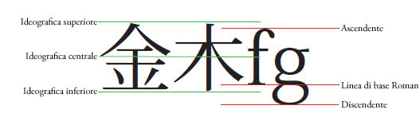
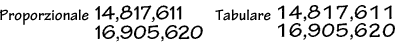
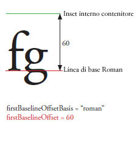
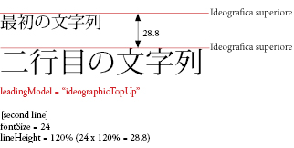
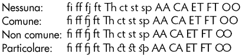
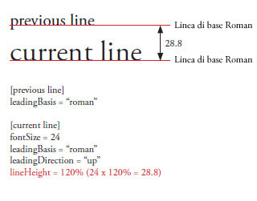
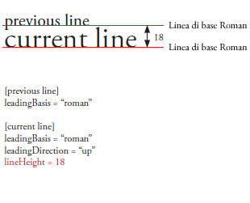

| Pacchetto | flashx.textLayout.container |
| Classe | public class ContainerController |
| Ereditarietà | ContainerController |
| Implementa | IInteractionEventHandler, ITextLayoutFormat, ISandboxSupport |
| Versione linguaggio: | ActionScript 3.0 |
| Versioni runtime: | Flash Player 10, AIR 1.5 |

Elementi API correlati
flashx.textLayout.elements.TextFlow
flash.text.engine.TextLine
 Nascondi proprietà pubbliche ereditate
Nascondi proprietà pubbliche ereditate Mostra proprietà pubbliche ereditate
Mostra proprietà pubbliche ereditate| Proprietà | Definito da | ||
|---|---|---|---|
| absoluteStart : int [sola lettura]
Restituisce il primo carattere nel contenitore. | ContainerController | ||
| alignmentBaseline : *
TextLayoutFormat: specifica la linea di base a cui deve allinearsi la linea di base dominante. | ContainerController | ||
| backgroundAlpha : *
TextLayoutFormat: valore alfa (trasparenza) per lo sfondo (adotta il valore predefinito se undefined durante la cascata). | ContainerController | ||
| backgroundColor : *
TextLayoutFormat: colore di sfondo del testo (adotta il valore predefinito se undefined durante la cascata). | ContainerController | ||
| baselineShift : *
TextLayoutFormat: quantità di spostamento della linea di base dal valore dominantBaseline. | ContainerController | ||
| blockProgression : *
TextLayoutFormat: specifica un avanzamento orizzontale o verticale del posizionamento delle righe. | ContainerController | ||
| breakOpportunity : *
TextLayoutFormat: controlla il punto in cui sono consentite le interruzioni di riga quando il testo con a capo automatico viene suddiviso su più righe. | ContainerController | ||
| cffHinting : *
TextLayoutFormat: il tipo di approssimazione CFF utilizzato per questo testo. | ContainerController | ||
| clearFloats : *
TextLayoutFormat: controlla il modo in cui il testo scorre intorno a un float. | ContainerController | ||
| color : *
TextLayoutFormat: colore del testo. | ContainerController | ||
| columnCount : *
TextLayoutFormat: numero di colonne di testo (utilizza il valore predefinito se è undefined durante la cascata). | ContainerController | ||
| columnGap : *
TextLayoutFormat: specifica la quantità di spazio per il margine, espressa in pixel, da lasciare tra le colonne (utilizza il valore predefinito se è undefined durante la cascata). | ContainerController | ||
| columnState : ColumnState [sola lettura]
Restituisce un oggetto ColumnState che descrive il numero e le caratteristiche delle colonne nel contenitore. | ContainerController | ||
| columnWidth : *
TextLayoutFormat: la larghezza della colonna è espressa in pixel (utilizza il valore predefinito se è undefined durante la cascata). | ContainerController | ||
| compositionHeight : Number [sola lettura]
Restituisce l'estensione verticale consentita per il testo all'interno del contenitore. | ContainerController | ||
| compositionWidth : Number [sola lettura]
Restituisce l'estensione orizzontale consentita per il testo all'interno del contenitore. | ContainerController | ||
| computedFormat : flashx.textLayout.formats:ITextLayoutFormat [sola lettura]
Restituisce un'istanza di ITextLayoutFormat con gli attributi applicati a questo contenitore, compresi gli attributi ereditati dal relativo elemento principale. | ContainerController | ||
 | constructor : Object
Un riferimento all'oggetto classe o alla funzione di costruzione per una determinata istanza di oggetto. | Object | |
| container : Sprite [sola lettura]
Restituisce l'oggetto di visualizzazione del contenitore che include le righe di testo per questa istanza di ContainerController. | ContainerController | ||
| containerControllerInitialFormat : flashx.textLayout.formats:ITextLayoutFormat [statico] | ContainerController | ||
| coreStyles : Object [sola lettura] Restituisce coreStyles per questo ContainerController. | ContainerController | ||
| digitCase : *
TextLayoutFormat: Il tipo di cifre (ascendenti/discendenti) utilizzato per questo testo. | ContainerController | ||
| digitWidth : *
TextLayoutFormat: il tipo di larghezza delle cifre (ascendenti/discendenti) utilizzato per questo testo. | ContainerController | ||
| direction : *
TextLayoutFormat: specifica il livello di incorporamento bidirezionale predefinito del testo nel blocco di testo. | ContainerController | ||
| dominantBaseline : *
TextLayoutFormat: specifica quale linea di base dell'elemento si aggancia ad alignmentBaseline per determinare la posizione verticale dell'elemento sulla riga. | ContainerController | ||
| firstBaselineOffset : *
TextLayoutFormat: specifica la posizione della linea di base della prima riga nel contenitore. | ContainerController | ||
| flowComposer : IFlowComposer [sola lettura]
Restituisce l'oggetto di composizione del flusso che compone ed evidenzia testo nel contenitore gestito da questo controller. | ContainerController | ||
| fontFamily : *
TextLayoutFormat: il nome del carattere da utilizzare o un elenco di nomi di caratteri separati da virgola. | ContainerController | ||
| fontLookup : *
TextLayoutFormat: la ricerca di caratteri da utilizzare. | ContainerController | ||
| fontSize : *
TextLayoutFormat: la dimensione del testo in pixel. | ContainerController | ||
| fontStyle : *
TextLayoutFormat: lo stile del testo. | ContainerController | ||
| fontWeight : *
TextLayoutFormat: lo spessore del testo. | ContainerController | ||
| format : flashx.textLayout.formats:ITextLayoutFormat
Archivia l'oggetto ITextLayoutFormat che contiene gli attributi per il contenitore. | ContainerController | ||
| horizontalScrollPolicy : String
Specifica il criterio di scorrimento orizzontale, impostabile assegnando una delle costanti della classe ScrollPolicy: ON, OFF o AUTO. | ContainerController | ||
| horizontalScrollPosition : Number Specifica la posizione di scorrimento orizzontale corrente sullo stage. | ContainerController | ||
| interactionManager : ISelectionManager [sola lettura]
La proprietà InteractionManager associata a questo oggetto TextFlow. | ContainerController | ||
| justificationRule : *
TextLayoutFormat: la regola utilizzata per la giustificazione del testo in un paragrafo. | ContainerController | ||
| justificationStyle : *
TextLayoutFormat: lo stile utilizzato per la giustificazione del paragrafo. | ContainerController | ||
| kerning : *
TextLayoutFormat: le crenature regolano i pixel tra determinate coppie di caratteri per migliorare la leggibilità. | ContainerController | ||
| leadingModel : *
TextLayoutFormat: specifica il modello di interlinea, che corrisponde a una combinazione di base e direzione dell'interlinea. | ContainerController | ||
| ligatureLevel : *
TextLayoutFormat: controlla quali legature definite nel carattere possono essere utilizzate nel testo. | ContainerController | ||
| lineBreak : *
TextLayoutFormat: controlla il ritorno a capo automatico all'interno del contenitore (adotta il valore predefinito se undefined durante la cascata). | ContainerController | ||
| lineHeight : *
TextLayoutFormat: controllo di interlinea (Leading) per il testo. | ContainerController | ||
| lineThrough : *
TextLayoutFormat: se true, applica il carattere barrato, ovvero una linea tracciata a metà del testo. | ContainerController | ||
| linkActiveFormat : *
TextLayoutFormat: definisce gli attributi di formattazione utilizzati per i collegamenti nello stato normal. | ContainerController | ||
| linkHoverFormat : *
TextLayoutFormat: definisce gli attributi di formattazione utilizzati per i collegamenti nello stato hover, quando il mouse è all'interno dei limiti di un collegamento (rollover). | ContainerController | ||
| linkNormalFormat : *
TextLayoutFormat: definisce gli attributi di formattazione utilizzati per i collegamenti nello stato normal. | ContainerController | ||
| listAutoPadding : *
TextLayoutFormat: specifica un rientro automatico per il bordo iniziale degli elenchi quando il valore di riempimento dell'elenco su quel lato è auto. | ContainerController | ||
| listMarkerFormat : *
TextLayoutFormat: definisce i marcatori di elenco degli attributi di formattazione. | ContainerController | ||
| listStylePosition : *
TextLayoutFormat: i valori validi sono ListStylePosition.INSIDE, ListStylePosition.OUTSIDE, FormatValue.INHERIT. Il valore predefinito è undefined e indica che non è impostato. Se durante la cascata i valori sono undefined, questa proprietà erediterà il valore da un elemento antenato. | ContainerController | ||
| listStyleType : *
TextLayoutFormat: i valori validi sono ListStyleType.UPPER_ALPHA, ListStyleType.LOWER_ALPHA, ListStyleType.UPPER_ROMAN, ListStyleType.LOWER_ROMAN, ListStyleType.NONE, ListStyleType.DISC, ListStyleType.CIRCLE, ListStyleType.SQUARE, ListStyleType.BOX, ListStyleType.CHECK, ListStyleType.DIAMOND, ListStyleType.HYPHEN, ListStyleType.ARABIC_INDIC, ListStyleType.BENGALI, ListStyleType.DECIMAL, ListStyleType.DECIMAL_LEADING_ZERO, ListStyleType.DEVANAGARI, ListStyleType.GUJARATI, ListStyleType.GURMUKHI, ListStyleType.KANNADA, ListStyleType.PERSIAN, ListStyleType.THAI, ListStyleType.URDU, ListStyleType.CJK_EARTHLY_BRANCH, ListStyleType.CJK_HEAVENLY_STEM, ListStyleType.HANGUL, ListStyleType.HANGUL_CONSTANT, ListStyleType.HIRAGANA, ListStyleType.HIRAGANA_IROHA, ListStyleType.KATAKANA, ListStyleType.KATAKANA_IROHA, ListStyleType.LOWER_ALPHA, ListStyleType.LOWER_GREEK, ListStyleType.LOWER_LATIN, ListStyleType.UPPER_ALPHA, ListStyleType.UPPER_GREEK, ListStyleType.UPPER_LATIN, FormatValue.INHERIT. Il valore predefinito è undefined e indica che non è impostato. Se durante la cascata i valori sono undefined, questa proprietà erediterà il valore da un elemento antenato. | ContainerController | ||
| locale : *
TextLayoutFormat: le impostazioni internazionali del testo. | ContainerController | ||
| paddingBottom : *
TextLayoutFormat: margine inferiore in pixel. | ContainerController | ||
| paddingLeft : *
TextLayoutFormat: margine sinistro in pixel. | ContainerController | ||
| paddingRight : *
TextLayoutFormat: margine destro in pixel. | ContainerController | ||
| paddingTop : *
TextLayoutFormat: margine superiore in pixel. | ContainerController | ||
| paragraphEndIndent : *
TextLayoutFormat: un numero che specifica, in pixel, la quantità di rientro del bordo finale del paragrafo. | ContainerController | ||
| paragraphSpaceAfter : *
TextLayoutFormat: un numero che specifica la quantità di spazio, in pixel, da lasciare dopo il paragrafo. | ContainerController | ||
| paragraphSpaceBefore : *
TextLayoutFormat: un numero che specifica la quantità di spazio, in pixel, da lasciare prima del paragrafo. | ContainerController | ||
| paragraphStartIndent : *
TextLayoutFormat: un numero che specifica, in pixel, la quantità di rientro del bordo iniziale del paragrafo. | ContainerController | ||
| renderingMode : *
TextLayoutFormat: la modalità di rendering utilizzata per questo testo. | ContainerController | ||
| rootElement : ContainerFormattedElement [sola lettura]
Restituisce l'elemento principale visualizzato nel contenitore. | ContainerController | ||
| styleName : *
TextLayoutFormat: assegna una classe identificativa all'elemento, rendendo possibile l'impostazione di uno stile per l'elemento mediante un riferimento allo styleName. | ContainerController | ||
| styles : Object [sola lettura] Restituisce gli stili di questo ContainerController. | ContainerController | ||
| tabStops : *
TextLayoutFormat: specifica le tabulazioni associate al paragrafo. | ContainerController | ||
| textAlign : *
TextLayoutFormat: l'allineamento delle righe nel paragrafo in relazione al contenitore. | ContainerController | ||
| textAlignLast : *
TextLayoutFormat: l'allineamento dell'ultima o della sola riga nel paragrafo in relazione al contenitore con testo giustificato. | ContainerController | ||
| textAlpha : *
TextLayoutFormat: valore alfa (trasparenza) per il testo. | ContainerController | ||
| textDecoration : *
TextLayoutFormat: la formattazione del testo. | ContainerController | ||
| textFlow : flashx.textLayout.elements:TextFlow [sola lettura]
Restituisce l'oggetto TextFlow il cui contenuto è visualizzato nel contenitore. | ContainerController | ||
| textIndent : *
TextLayoutFormat: un valore Number che specifica, in pixel, la quantità di rientro della prima riga del paragrafo. | ContainerController | ||
| textJustify : *
TextLayoutFormat: specifica le opzioni per la giustificazione del testo. | ContainerController | ||
| textLength : int [sola lettura] Restituisce il numero totale dei caratteri nel contenitore. | ContainerController | ||
| textRotation : *
TextLayoutFormat: determina il numero di gradi di rotazione di questo testo. | ContainerController | ||
| trackingLeft : *
TextLayoutFormat: numero espresso in pixel (o percentuale di fontSize, ad esempio 120%) che indica la quantità di tracciamento (crenatura manuale) da applicare a sinistra di ogni carattere. | ContainerController | ||
| trackingRight : *
TextLayoutFormat: numero espresso in pixel (o percentuale di fontSize, ad esempio 120%) che indica la quantità di tracciamento (crenatura manuale) da applicare a destra di ogni carattere. | ContainerController | ||
| typographicCase : *
TextLayoutFormat: il tipo di carattere tipografico (maiuscolo/minuscolo) utilizzato per questo testo. | ContainerController | ||
| userStyles : Object Consente di leggere e scrivere stili utente in un oggetto ContainerController. | ContainerController | ||
| verticalAlign : *
TextLayoutFormat: allineamento verticale o giustificazione (utilizza il valore predefinito se è undefined durante la cascata). | ContainerController | ||
| verticalScrollPolicy : String Specifica il criterio di scorrimento verticale, impostabile assegnando una delle costanti della classe ScrollPolicy: ON, OFF o AUTO. | ContainerController | ||
| verticalScrollPosition : Number Specifica la posizione di scorrimento verticale corrente sullo stage. | ContainerController | ||
| whiteSpaceCollapse : *
TextLayoutFormat: comprime o mantiene gli spazi vuoti durante l'importazione del testo in un oggetto TextFlow. | ContainerController | ||
| wordSpacing : *
TextLayoutFormat: specifica la spaziatura ottimale, minima e massima (come moltiplicatore della larghezza di uno spazio normale) da utilizzare tra le parole durante la giustificazione. | ContainerController | ||
| Metodo | Definito da | ||
|---|---|---|---|
ContainerController(container:Sprite, compositionWidth:Number = 100, compositionHeight:Number = 100)
Costruttore. Crea un'istanza di ContainerController. | ContainerController | ||
Elabora l'evento Event.ACTIVATE quando il client gestisce gli eventi. | ContainerController | ||
Gestisce un evento di scorrimento durante una selezione di trascinamento. | ContainerController | ||
Chiamato per richiedere ai client di iniziare a inviare gli eventi mouseup e mousemove dall'esterno della sandbox di sicurezza. | ContainerController | ||
Cancella lo stile specificato da styleProp da questo FlowElement. | ContainerController | ||
Elabora l'evento Event.DEACTIVATE quando il client gestisce gli eventi. | ContainerController | ||
Elabora un evento di modifica (CUT, COPY, PASTE, SELECT_ALL) quando il client gestisce gli eventi. | ContainerController | ||
Chiamato per informare i client che l'invio degli eventi mouseup e mousemove dall'esterno della sandbox di sicurezza non è più necessario. | ContainerController | ||
Elabora gli eventi FocusEvent.KEY_FOCUS_CHANGE e FocusEvent.MOUSE_FOCUS_CHANGE quando il client gestisce gli eventi. | ContainerController | ||
Elabora l'evento FocusEvent.FOCUS_IN quando il client gestisce gli eventi. | ContainerController | ||
Elabora l'evento FocusEvent.FOCUS_OUT quando il client gestisce gli eventi. | ContainerController | ||
Restituisce l'area occupata dal testo, come viene riflessa dall'ultima operazione di composizione o aggiornamento. | ContainerController | ||
Rappresenta la distanza di scorrimento necessaria per scorrere verso l'alto o il basso per il numero di righe specificato. | ContainerController | ||
Restituisce il valore dello stile specificato dal parametro styleProp. | ContainerController | ||
|
Indica se per un oggetto è definita una proprietà specifica. | Object | |
Elabora l'evento IMEEvent.IME_START_COMPOSITION quando il client gestisce gli eventi. | ContainerController | ||
Contrassegna tutto il testo in questo contenitore per la composizione. | ContainerController | ||
Determina se il contenitore include testo che richiede la composizione. | ContainerController | ||
|
Indica se un'istanza della classe Object si trova nella catena di prototipi dell'oggetto specificato come parametro. | Object | |
Elabora l'evento KeyboardEvent.KEY_DOWN quando il client gestisce gli eventi. | ContainerController | ||
Elabora l'evento FocusEvent.KEY_FOCUS_CHANGE quando il client gestisce gli eventi. | ContainerController | ||
Elabora l'evento Keyboard.KEY_UP quando il client gestisce gli eventi. | ContainerController | ||
Elabora l'evento ContextMenuEvent.MENU_SELECT quando il client gestisce gli eventi. | ContainerController | ||
Elabora l'evento MouseEvent.DOUBLE_CLICK quando il client gestisce gli eventi. | ContainerController | ||
Elabora l'evento MouseEvent.MOUSE_DOWN quando il client gestisce gli eventi. | ContainerController | ||
Elabora l'evento MouseEvent.MOUSE_MOVE quando il client gestisce gli eventi. | ContainerController | ||
Chiama il client affinché proceda all'invio di un evento mouseMove dall'esterno di una sandbox di sicurezza. | ContainerController | ||
Elabora l'evento MouseEvent.MOUSE_OUT quando il client gestisce gli eventi. | ContainerController | ||
Elabora l'evento MouseEvent.MOUSE_OVER quando il client gestisce gli eventi. | ContainerController | ||
Elabora l'evento MouseEvent.MOUSE_UP quando il client gestisce gli eventi. | ContainerController | ||
Chiama il client affinché proceda all'invio di un evento mouseUp dall'esterno di una sandbox di sicurezza. | ContainerController | ||
Elabora l'evento MouseEvent.MOUSE_WHEEL quando il client gestisce gli eventi. | ContainerController | ||
|
Indica se la proprietà specificata esiste ed è enumerabile. | Object | |
Esegue lo scorrimento affinché l'intervallo di testo sia visibile nel contenitore. | ContainerController | ||
Imposta l'intervallo del testo selezionato in un componente che implementa ITextSupport. | ContainerController | ||
Imposta la larghezza e l'altezza consentita per il testo nel contenitore. | ContainerController | ||
|
Imposta la disponibilità di una proprietà dinamica per le operazioni cicliche. | Object | |
Imposta il valore dello stile specificato dal parametro styleProp sul valore specificato dal parametro newValue. | ContainerController | ||
Elabora l'evento SoftKeyboardEvent.SOFT_KEYBOARD_ACTIVATING quando il client gestisce gli eventi. | ContainerController | ||
Elabora l'evento TextEvent.TEXT_INPUT quando il client gestisce gli eventi. | ContainerController | ||
|
Restituisce la rappresentazione in formato stringa di questo oggetto, formattato in base alle convenzioni specifiche per le versioni localizzate. | Object | |
|
Restituisce la rappresentazione in formato stringa dell'oggetto specificato. | Object | |
|
Restituisce il valore di base dell'oggetto specificato. | Object | |
| Metodo | Definito da | ||
|---|---|---|---|
Aggiunge un oggetto flash.display.Shape in cui vengono disegnate le forme di sfondo (ad esempio il colore di sfondo). | ContainerController | ||
addInlineGraphicElement(parent:DisplayObjectContainer, inlineGraphicElement:DisplayObject, index:int):void
Aggiunge un oggetto flash.display.DisplayObject come discendente di parent. | ContainerController | ||
Aggiunge un oggetto flash.display.DisplayObjectContainer a cui vengono aggiunte forme di selezione (ad esempio, evidenziazione della selezione di blocchi, cursore e così via) . | ContainerController | ||
Aggiunge un oggetto flash.text.engine.TextLine come elemento discendente di container. | ContainerController | ||
Crea un menu di scelta rapida per ContainerController. | ContainerController | ||
Ottiene la posizione di indice in cui deve essere visualizzata la riga di testo nel relativo elemento principale. | ContainerController | ||
Rimuove un oggetto flash.display.Shape in cui vengono disegnate le forme di sfondo (ad esempio il colore di sfondo). | ContainerController | ||
Rimuove un oggetto flash.display.DisplayObject dal relativo elemento principale. | ContainerController | ||
Rimuove l'oggetto flash.display.DisplayObjectContainer che contiene forme di selezione (ad esempio, evidenziazione della selezione di blocchi, cursore e così via). | ContainerController | ||
Rimuove un oggetto flash.text.engine.TextLine dal relativo elemento principale. | ContainerController | ||
Durante lo scorrimento imposta il rettangolo di scorrimento sul rettangolo del contenitore affinché tutte le righe visualizzate parzialmente vengano inserite nella regione scorrevole. | ContainerController | ||
_mouseWheelListenerAttached | proprietà |
tlf_internal var _mouseWheelListenerAttached:Boolean = falseabsoluteStart | proprietà |
absoluteStart:int [sola lettura] | Versione linguaggio: | ActionScript 3.0 |
| Versioni runtime: | Flash Player 10, AIR 1.5 |
Restituisce il primo carattere nel contenitore. Se non si tratta del primo contenitore nel flusso, questo valore viene aggiornato quando il testo viene composto, ovvero quando vengono chiamati i metodi compose() o updateAllControllers() di IFlowComposer.
Implementazione
public function get absoluteStart():intElementi API correlati
alignmentBaseline | proprietà |
alignmentBaseline:*| Versione linguaggio: | ActionScript 3.0 |
| Versioni runtime: | Flash Player 10, AIR 1.5 |
TextLayoutFormat: specifica la linea di base a cui deve allinearsi la linea di base dominante. Se, ad esempio, impostate dominantBaseline su ASCENT, l'impostazione di alignmentBaseline su DESCENT consente di allineare la parte superiore del testo con la linea di base DESCENT o al di sotto della linea. L'elemento più grande nella riga determina in genere le linee di base.

I valori validi sono TextBaseline.ROMAN, TextBaseline.ASCENT, TextBaseline.DESCENT, TextBaseline.IDEOGRAPHIC_TOP, TextBaseline.IDEOGRAPHIC_CENTER, TextBaseline.IDEOGRAPHIC_BOTTOM, TextBaseline.USE_DOMINANT_BASELINE, FormatValue.INHERIT.
Il valore predefinito è undefined e indica che non è impostato.
Se durante la cascata i valori sono undefined, questa proprietà erediterà il valore da un elemento antenato. Se nessun antenato ha impostato questa proprietà, il valore sarà TextBaseline.USE_DOMINANT_BASELINE.
Implementazione
public function get alignmentBaseline():* public function set alignmentBaseline(value:any):voidGenera
RangeError — Quando questo valore non rientra nell'intervallo per questa proprietà.
|
Elementi API correlati
backgroundAlpha | proprietà |
backgroundAlpha:*| Versione linguaggio: | ActionScript 3.0 |
| Versioni runtime: | Flash Player 10, AIR 1.5 |
TextLayoutFormat: valore alfa (trasparenza) per lo sfondo (adotta il valore predefinito se undefined durante la cascata). Un valore 0 è completamente trasparente, mentre un valore 1 è completamente opaco. Gli oggetti di visualizzazione con alpha impostato su 0 sono attivi, anche se invisibili.
I valori consentiti sono numeri compresi tra 0 e 1 e FormatValue.INHERIT.
Il valore predefinito è undefined e indica che non è impostato.
Se durante la cascata i valori sono undefined, questa proprietà avrà il valore 1.
Implementazione
public function get backgroundAlpha():* public function set backgroundAlpha(value:any):voidGenera
RangeError — Quando questo valore non rientra nell'intervallo per questa proprietà.
|
backgroundColor | proprietà |
backgroundColor:*| Versione linguaggio: | ActionScript 3.0 |
| Versioni runtime: | Flash Player 10, AIR 1.5 |
TextLayoutFormat: colore di sfondo del testo (adotta il valore predefinito se undefined durante la cascata). Può essere il valore costante BackgroundColor.TRANSPARENT o un valore esadecimale che specifica i tre valori RGB (rosso, verde, blu) a 8 bit; ad esempio, 0xFF0000 è rosso e 0x00FF00 è verde.
I valori consentiti come stringa sono BackgroundColor.TRANSPARENT, FormatValue.INHERIT e i valori uint da 0x0 a 0xffffffff.
Il valore predefinito è undefined e indica che non è impostato.
Se durante la cascata i valori sono undefined, questa proprietà avrà il valore BackgroundColor.TRANSPARENT.
Implementazione
public function get backgroundColor():* public function set backgroundColor(value:any):voidGenera
RangeError — Quando questo valore non rientra nell'intervallo per questa proprietà.
|
Elementi API correlati
baselineShift | proprietà |
baselineShift:*| Versione linguaggio: | ActionScript 3.0 |
| Versioni runtime: | Flash Player 10, AIR 1.5 |
TextLayoutFormat: quantità di spostamento della linea di base dal valore dominantBaseline. Unità in pixel o percentuale di fontSize. In tal caso, immettete un valore di stringa, ad esempio 140%. I valori positivi spostano la riga verso l'alto per il testo orizzontale (a destra per il verticale), mentre i valori negativi lo spostano verso il basso per il testo orizzontale (a sinistra per il verticale).
I valori validi sono BaselineShift.SUPERSCRIPT, BaselineShift.SUBSCRIPT, FormatValue.INHERIT.
I valori consentiti come numero sono compresi tra -1000 e 1000.
I valori consentiti come percentuale sono numeri compresi tra -1000 e 1000.
Il valore predefinito è undefined e indica che non è impostato.
Se durante la cascata i valori sono undefined, questa proprietà erediterà il valore da un elemento antenato. Se nessun antenato ha impostato questa proprietà, il valore sarà 0.0.
Implementazione
public function get baselineShift():* public function set baselineShift(value:any):voidGenera
RangeError — Quando questo valore non rientra nell'intervallo per questa proprietà.
|
Elementi API correlati
blockProgression | proprietà |
blockProgression:*| Versione linguaggio: | ActionScript 3.0 |
| Versioni runtime: | Flash Player 10, AIR 1.5 |
TextLayoutFormat: specifica un avanzamento orizzontale o verticale del posizionamento delle righe. Le righe vengono posizionate dall'alto verso il basso (BlockProgression.TB, utilizzato per testo orizzontale) o da destra a sinistra (BlockProgression.RL, utilizzato per testo verticale).
I valori validi sono BlockProgression.RL, BlockProgression.TB, FormatValue.INHERIT.
Il valore predefinito è undefined e indica che non è impostato.
Se durante la cascata i valori sono undefined, questa proprietà erediterà il valore da un elemento antenato. Se nessun antenato ha impostato questa proprietà, il valore sarà BlockProgression.TB.
Implementazione
public function get blockProgression():* public function set blockProgression(value:any):voidGenera
RangeError — Quando questo valore non rientra nell'intervallo per questa proprietà.
|
Elementi API correlati
breakOpportunity | proprietà |
breakOpportunity:*| Versione linguaggio: | ActionScript 3.0 |
| Versioni runtime: | Flash Player 10, AIR 1.5 |
TextLayoutFormat: controlla il punto in cui sono consentite le interruzioni di riga quando il testo con a capo automatico viene suddiviso su più righe. Impostate su BreakOpportunity.AUTO per interrompere il testo normalmente. Impostate su BreakOpportunity.NONE per non interrompere il testo, a meno che il testo non superi la misura e non siano disponibili altri punti per l'interruzione della riga. Impostate su BreakOpportunity.ANY per consentire l'interruzione in qualsiasi punto della riga, non solo tra le parole. Impostate su BreakOpportunity.ALL per fare in modo che ogni gruppo tipografico verrà inserito su una riga distinta (utile per il testo su un tracciato).
I valori validi sono BreakOpportunity.ALL, BreakOpportunity.ANY, BreakOpportunity.AUTO, BreakOpportunity.NONE, FormatValue.INHERIT.
Il valore predefinito è undefined e indica che non è impostato.
Se durante la cascata i valori sono undefined, questa proprietà erediterà il valore da un elemento antenato. Se nessun antenato ha impostato questa proprietà, il valore sarà BreakOpportunity.AUTO.
Implementazione
public function get breakOpportunity():* public function set breakOpportunity(value:any):voidGenera
RangeError — Quando questo valore non rientra nell'intervallo per questa proprietà.
|
Elementi API correlati
cffHinting | proprietà |
cffHinting:*| Versione linguaggio: | ActionScript 3.0 |
| Versioni runtime: | Flash Player 10, AIR 1.5 |
TextLayoutFormat: il tipo di approssimazione CFF utilizzato per questo testo. L'approssimazione CFF determina se il runtime Flash forza o meno l'adattamento dei tratti orizzontali spessi a una griglia di pixel o sottopixel. Questa proprietà è pertinente solo se la proprietà renderingMode è impostata su RenderingMode.CFF e il carattere è incorporato (la proprietà fontLookup è impostata su FontLookup.EMBEDDED_CFF). Con dimensioni dello schermo limitate, l'approssimazione produce un testo chiaro e leggibile per i lettori umani.
I valori validi sono CFFHinting.NONE, CFFHinting.HORIZONTAL_STEM, FormatValue.INHERIT.
Il valore predefinito è undefined e indica che non è impostato.
Se durante la cascata i valori sono undefined, questa proprietà erediterà il valore da un elemento antenato. Se nessun antenato ha impostato questa proprietà, il valore sarà CFFHinting.HORIZONTAL_STEM.
Implementazione
public function get cffHinting():* public function set cffHinting(value:any):voidGenera
RangeError — Quando questo valore non rientra nell'intervallo per questa proprietà.
|
Elementi API correlati
clearFloats | proprietà |
clearFloats:*| Versione linguaggio: | ActionScript 3.0 |
| Versioni runtime: | Flash Player 10, AIR 1.5 |
TextLayoutFormat: controlla il modo in cui il testo scorre intorno a un float. Il valore none consente al testo di scorrere più da vicino intorno a un float. I valori left e right fanno sì che il testo "salti" ogni porzione del contenitore che ha un float rispettivamente sinistro o destro. Il valore both fa sì che il testo "salti" tutti i float.
I valori validi sono ClearFloats.START, ClearFloats.END, ClearFloats.LEFT, ClearFloats.RIGHT, ClearFloats.BOTH, ClearFloats.NONE, FormatValue.INHERIT.
Il valore predefinito è undefined e indica che non è impostato.
Se durante la cascata i valori sono undefined, questa proprietà avrà il valore ClearFloats.NONE.
Implementazione
public function get clearFloats():* public function set clearFloats(value:any):voidGenera
RangeError — Quando questo valore non rientra nell'intervallo per questa proprietà.
|
Elementi API correlati
color | proprietà |
color:*| Versione linguaggio: | ActionScript 3.0 |
| Versioni runtime: | Flash Player 10, AIR 1.5 |
TextLayoutFormat: colore del testo. Un numero esadecimale che specifica tre valori RGB (rosso, verde, blu) a 8 bit. Ad esempio 0xFF0000 è rosso e 0x00FF00 è verde.
Il valore predefinito è undefined e indica che non è impostato.
Se durante la cascata i valori sono undefined, questa proprietà erediterà il valore da un elemento antenato. Se nessun antenato ha impostato questa proprietà, il valore sarà 0.
Implementazione
public function get color():* public function set color(value:any):voidGenera
RangeError — Quando questo valore non rientra nell'intervallo per questa proprietà.
|
columnCount | proprietà |
columnCount:*| Versione linguaggio: | ActionScript 3.0 |
| Versioni runtime: | Flash Player 10, AIR 1.5 |
TextLayoutFormat: numero di colonne di testo (utilizza il valore predefinito se è undefined durante la cascata). Il numero di colonne ignora le altre impostazioni delle colonne. Il valore è un numero intero o FormatValue.AUTO se non specificato. Se columnCount non è specificato, viene utilizzato columnWidth per creare quante più colonne è possibile inserire nel contenitore.
I valori consentiti come stringa sono FormatValue.AUTO, FormatValue.INHERIT e i valori int da 1 a 50.
Il valore predefinito è undefined e indica che non è impostato.
Se durante la cascata i valori sono undefined, questa proprietà avrà il valore FormatValue.AUTO.
Implementazione
public function get columnCount():* public function set columnCount(value:any):voidGenera
RangeError — Quando questo valore non rientra nell'intervallo per questa proprietà.
|
Elementi API correlati
columnGap | proprietà |
columnGap:*| Versione linguaggio: | ActionScript 3.0 |
| Versioni runtime: | Flash Player 10, AIR 1.5 |
TextLayoutFormat: specifica la quantità di spazio per il margine, espressa in pixel, da lasciare tra le colonne (utilizza il valore predefinito se è undefined durante la cascata). Il valore è un numero
I valori consentiti sono i numeri compresi tra 0 e 1000 e FormatValue.INHERIT.
Il valore predefinito è undefined e indica che non è impostato.
Se durante la cascata i valori sono undefined, questa proprietà avrà il valore 20.
Implementazione
public function get columnGap():* public function set columnGap(value:any):voidGenera
RangeError — Quando questo valore non rientra nell'intervallo per questa proprietà.
|
columnState | proprietà |
columnState:ColumnState [sola lettura] | Versione linguaggio: | ActionScript 3.0 |
| Versioni runtime: | Flash Player 10, AIR 1.5 |
Restituisce un oggetto ColumnState che descrive il numero e le caratteristiche delle colonne nel contenitore. Questi valori vengono aggiornati quando il testo viene ricomposto, come risultato di IFlowComposer.compose() o di IFlowComposer.updateAllControllers().
Implementazione
public function get columnState():ColumnStateElementi API correlati
columnWidth | proprietà |
columnWidth:*| Versione linguaggio: | ActionScript 3.0 |
| Versioni runtime: | Flash Player 10, AIR 1.5 |
TextLayoutFormat: la larghezza della colonna è espressa in pixel (utilizza il valore predefinito se è undefined durante la cascata). Se specificate la larghezza delle colonne, ma non il numero, TextLayout creerà il numero massimo di colonne per quella larghezza, in base alla larghezza del contenitore e alle impostazioni di columnGap. L'eventuale spazio rimanente viene lasciato dopo l'ultima colonna. Il valore è un numero.
I valori validi come stringa sono FormatValue.AUTO, FormatValue.INHERIT i numeri da 0 a 8000.
Il valore predefinito è undefined e indica che non è impostato.
Se durante la cascata i valori sono undefined, questa proprietà avrà il valore FormatValue.AUTO.
Implementazione
public function get columnWidth():* public function set columnWidth(value:any):voidGenera
RangeError — Quando questo valore non rientra nell'intervallo per questa proprietà.
|
Elementi API correlati
compositionHeight | proprietà |
compositionHeight:Number [sola lettura] | Versione linguaggio: | ActionScript 3.0 |
| Versioni runtime: | Flash Player 10, AIR 1.5 |
Restituisce l'estensione verticale consentita per il testo all'interno del contenitore. Il valore è specificato in pixel.
Implementazione
public function get compositionHeight():NumberElementi API correlati
compositionWidth | proprietà |
compositionWidth:Number [sola lettura] | Versione linguaggio: | ActionScript 3.0 |
| Versioni runtime: | Flash Player 10, AIR 1.5 |
Restituisce l'estensione orizzontale consentita per il testo all'interno del contenitore. Il valore è specificato in pixel.
Implementazione
public function get compositionWidth():NumberElementi API correlati
computedFormat | proprietà |
computedFormat:flashx.textLayout.formats:ITextLayoutFormat [sola lettura] | Versione linguaggio: | ActionScript 3.0 |
| Versioni runtime: | Flash Player 10, AIR 1.5 |
Restituisce un'istanza di ITextLayoutFormat con gli attributi applicati a questo contenitore, compresi gli attributi ereditati dal relativo elemento principale.
Implementazione
public function get computedFormat():flashx.textLayout.formats:ITextLayoutFormatElementi API correlati
container | proprietà |
container:Sprite [sola lettura] | Versione linguaggio: | ActionScript 3.0 |
| Versioni runtime: | Flash Player 10, AIR 1.5 |
Restituisce l'oggetto di visualizzazione del contenitore che include le righe di testo per questa istanza di ContainerController.
Implementazione
public function get container():SpriteElementi API correlati
containerControllerInitialFormat | proprietà |
containerControllerInitialFormat:flashx.textLayout.formats:ITextLayoutFormatImplementazione
public static function get containerControllerInitialFormat():flashx.textLayout.formats:ITextLayoutFormat public static function set containerControllerInitialFormat(value:flashx.textLayout.formats:ITextLayoutFormat):voidcoreStyles | proprietà |
coreStyles:Object [sola lettura] | Versione linguaggio: | ActionScript 3.0 |
| Versioni runtime: | Flash Player 10, AIR 1.5 |
Restituisce coreStyles per questo ContainerController. Tenete presente che la proprietà getter esegue una copia del dizionario degli stili principali. L'oggetto restituito include i formati che sono definiti da TextLayoutFormat e sono in TextLayoutFormat.description. L'oggetto restituito è composto da un array di coppie nome stile-valore.
Implementazione
public function get coreStyles():ObjectElementi API correlati
digitCase | proprietà |
digitCase:*| Versione linguaggio: | ActionScript 3.0 |
| Versioni runtime: | Flash Player 10, AIR 1.5 |
TextLayoutFormat: Il tipo di cifre (ascendenti/discendenti) utilizzato per questo testo. L'impostazione del valore su DigitCase.OLD_STYLE si avvicina ai formati di lettere in caratteri minuscoli con diversi tratti ascendenti e discendenti. La spaziatura tra le cifre è proporzionale. Questo stile è disponibile solo nei tipi di carattere selezionati, più comunemente in un carattere supplementare o specializzato. L'impostazione DigitCase.LINING applica l'altezza delle lettere maiuscole e di solito ha una spaziatura fissa per l'allineamento nei grafici.

I valori validi sono DigitCase.DEFAULT, DigitCase.LINING, DigitCase.OLD_STYLE, FormatValue.INHERIT.
Il valore predefinito è undefined e indica che non è impostato.
Se durante la cascata i valori sono undefined, questa proprietà erediterà il valore da un elemento antenato. Se nessun antenato ha impostato questa proprietà, il valore sarà DigitCase.DEFAULT.
Implementazione
public function get digitCase():* public function set digitCase(value:any):voidGenera
RangeError — Quando questo valore non rientra nell'intervallo per questa proprietà.
|
Elementi API correlati
digitWidth | proprietà |
digitWidth:*| Versione linguaggio: | ActionScript 3.0 |
| Versioni runtime: | Flash Player 10, AIR 1.5 |
TextLayoutFormat: il tipo di larghezza delle cifre (ascendenti/discendenti) utilizzato per questo testo. Questo valore può essere DigitWidth.PROPORTIONAL, più adatto per i numeri isolati, oppure DigitWidth.TABULAR, che è più appropriato per i numeri in tabelle, grafici e righe verticali.

DigitCase.DEFAULTDigitWidth.DEFAULT, DigitWidth.PROPORTIONAL, DigitWidth.TABULAR, FormatValue.INHERIT.
Il valore predefinito è undefined e indica che non è impostato.
Se durante la cascata i valori sono undefined, questa proprietà erediterà il valore da un elemento antenato. Se nessun antenato ha impostato questa proprietà, il valore sarà DigitWidth.DEFAULT.
Implementazione
public function get digitWidth():* public function set digitWidth(value:any):voidGenera
RangeError — Quando questo valore non rientra nell'intervallo per questa proprietà.
|
Elementi API correlati
direction | proprietà |
direction:*| Versione linguaggio: | ActionScript 3.0 |
| Versioni runtime: | Flash Player 10, AIR 1.5 |
TextLayoutFormat: specifica il livello di incorporamento bidirezionale predefinito del testo nel blocco di testo. Ordine di lettura da sinistra a destra come negli script delle lingue latine oppure da destra a sinistra come in arabo o ebraico. Questa proprietà influisce anche sulla direzione delle colonne quando viene applicata a livello del contenitore. Le colonne possono essere da sinistra a destra o da destra a sinistra, come il testo. Di seguito sono forniti alcuni esempi:

I valori validi sono Direction.LTR, Direction.RTL, FormatValue.INHERIT.
Il valore predefinito è undefined e indica che non è impostato.
Se durante la cascata i valori sono undefined, questa proprietà erediterà il valore da un elemento antenato. Se nessun antenato ha impostato questa proprietà, il valore sarà Direction.LTR.
Implementazione
public function get direction():* public function set direction(value:any):voidGenera
RangeError — Quando questo valore non rientra nell'intervallo per questa proprietà.
|
Elementi API correlati
dominantBaseline | proprietà |
dominantBaseline:*| Versione linguaggio: | ActionScript 3.0 |
| Versioni runtime: | Flash Player 10, AIR 1.5 |
TextLayoutFormat: specifica quale linea di base dell'elemento si aggancia ad alignmentBaseline per determinare la posizione verticale dell'elemento sulla riga. Un valore TextBaseline.AUTO seleziona la linea di base dominante in base alla proprietà locale del paragrafo principale. Per giapponese e cinese, il valore della linea di base selezionato è TextBaseline.IDEOGRAPHIC_CENTER; per tutte le altre lingue è TextBaseline.ROMAN. Questi valori della linea di base sono determinati dai valori del carattere e della relativa dimensione.
I valori validi sono FormatValue.AUTO, TextBaseline.ROMAN, TextBaseline.ASCENT, TextBaseline.DESCENT, TextBaseline.IDEOGRAPHIC_TOP, TextBaseline.IDEOGRAPHIC_CENTER, TextBaseline.IDEOGRAPHIC_BOTTOM, FormatValue.INHERIT.
Il valore predefinito è undefined e indica che non è impostato.
Se durante la cascata i valori sono undefined, questa proprietà erediterà il valore da un elemento antenato. Se nessun antenato ha impostato questa proprietà, il valore sarà FormatValue.AUTO.
Implementazione
public function get dominantBaseline():* public function set dominantBaseline(value:any):voidGenera
RangeError — Quando questo valore non rientra nell'intervallo per questa proprietà.
|
Elementi API correlati
firstBaselineOffset | proprietà |
firstBaselineOffset:*| Versione linguaggio: | ActionScript 3.0 |
| Versioni runtime: | Flash Player 10, AIR 1.5 |
TextLayoutFormat: specifica la posizione della linea di base della prima riga nel contenitore. La linea di base a cui si riferisce la proprietà dipende dalla versione locale a livello del contenitore. Per giapponese e cinese è TextBaseline.IDEOGRAPHIC_BOTTOM; per tutte le altre lingue è TextBaseline.ROMAN. L'offset dal margine interno superiore (o destro se blockProgression è RL) del contenitore rispetto alla linea di base della prima riga può essere BaselineOffset.ASCENT, ovvero uguale all'ascendente della riga, BaselineOffset.LINE_HEIGHT, ovvero uguale all'altezza della prima riga oppure un valore numerico fisso che specifica una distanza assoluta. BaselineOffset.AUTO allinea l'ascendente della riga con il margine interno superiore del contenitore.



I valori validi come stringa sono BaselineOffset.AUTO, BaselineOffset.ASCENT, BaselineOffset.LINE_HEIGHT, FormatValue.INHERIT e i numeri da 0 a 1000.
Il valore predefinito è undefined e indica che non è impostato.
Se durante la cascata i valori sono undefined, questa proprietà erediterà il valore da un elemento antenato. Se nessun antenato ha impostato questa proprietà, il valore sarà BaselineOffset.AUTO.
Implementazione
public function get firstBaselineOffset():* public function set firstBaselineOffset(value:any):voidGenera
RangeError — Quando questo valore non rientra nell'intervallo per questa proprietà.
|
Elementi API correlati
flowComposer | proprietà |
flowComposer:IFlowComposer [sola lettura] | Versione linguaggio: | ActionScript 3.0 |
| Versioni runtime: | Flash Player 10, AIR 1.5 |
Restituisce l'oggetto di composizione del flusso che compone ed evidenzia testo nel contenitore gestito da questo controller.
Implementazione
public function get flowComposer():IFlowComposerElementi API correlati
fontFamily | proprietà |
fontFamily:*| Versione linguaggio: | ActionScript 3.0 |
| Versioni runtime: | Flash Player 10, AIR 1.5 |
TextLayoutFormat: il nome del carattere da utilizzare o un elenco di nomi di caratteri separati da virgola. Il rendering degli elementi viene eseguito dal runtime Flash utilizzando il primo carattere disponibile nell'elenco. Arial, Helvetica, _sans, ad esempio, fa in modo che venga eseguita automaticamente la ricerca di Arial, quindi di Helvetica se Arial non viene trovato, quindi di _sans se non viene trovato nessuno dei due.
Il valore predefinito è undefined e indica che non è impostato.
Se durante la cascata i valori sono undefined, questa proprietà erediterà il valore da un elemento antenato. Se nessun antenato ha impostato questa proprietà, il valore sarà Arial.
Implementazione
public function get fontFamily():* public function set fontFamily(value:any):voidGenera
RangeError — Quando questo valore non rientra nell'intervallo per questa proprietà.
|
fontLookup | proprietà |
fontLookup:*| Versione linguaggio: | ActionScript 3.0 |
| Versioni runtime: | Flash Player 10, AIR 1.5 |
TextLayoutFormat: la ricerca di caratteri da utilizzare. Specificando FontLookup.DEVICE vengono utilizzati i caratteri installati nel sistema su cui viene eseguito il file SWF. Con i caratteri del dispositivo le dimensioni del filmato sono inferiori, ma il rendering del testo non è uguale in tutti i sistemi e in tutte le piattaforme. Specificando FontLookup.EMBEDDED_CFF vengono utilizzati i profili di carattere incorporati nel file SWF pubblicato. Con i caratteri incorporati la dimensione del file SWF aumenta (a volte anche in modo significativo), ma il testo viene visualizzato in modo coerente nel carattere scelto.
I valori validi sono FontLookup.DEVICE, FontLookup.EMBEDDED_CFF, FormatValue.INHERIT.
Il valore predefinito è undefined e indica che non è impostato.
Se durante la cascata i valori sono undefined, questa proprietà erediterà il valore da un elemento antenato. Se nessun antenato ha impostato questa proprietà, il valore sarà FontLookup.DEVICE.
Implementazione
public function get fontLookup():* public function set fontLookup(value:any):voidGenera
RangeError — Quando questo valore non rientra nell'intervallo per questa proprietà.
|
Elementi API correlati
fontSize | proprietà |
fontSize:*| Versione linguaggio: | ActionScript 3.0 |
| Versioni runtime: | Flash Player 10, AIR 1.5 |
TextLayoutFormat: la dimensione del testo in pixel.
I valori consentiti sono i numeri compresi tra 1 e 720 e FormatValue.INHERIT.
Il valore predefinito è undefined e indica che non è impostato.
Se durante la cascata i valori sono undefined, questa proprietà erediterà il valore da un elemento antenato. Se nessun antenato ha impostato questa proprietà, il valore sarà 12.
Implementazione
public function get fontSize():* public function set fontSize(value:any):voidGenera
RangeError — Quando questo valore non rientra nell'intervallo per questa proprietà.
|
fontStyle | proprietà |
fontStyle:*| Versione linguaggio: | ActionScript 3.0 |
| Versioni runtime: | Flash Player 10, AIR 1.5 |
TextLayoutFormat: lo stile del testo. Può essere FontPosture.NORMAL, per il testo semplice, oppure FontPosture.ITALIC per il corsivo. Questa proprietà può essere applicata solo ai caratteri del dispositivo (la proprietà fontLookup è impostata su flash.text.engine.FontLookup.DEVICE).
I valori validi sono FontPosture.NORMAL, FontPosture.ITALIC, FormatValue.INHERIT.
Il valore predefinito è undefined e indica che non è impostato.
Se durante la cascata i valori sono undefined, questa proprietà erediterà il valore da un elemento antenato. Se nessun antenato ha impostato questa proprietà, il valore sarà FontPosture.NORMAL.
Implementazione
public function get fontStyle():* public function set fontStyle(value:any):voidGenera
RangeError — Quando questo valore non rientra nell'intervallo per questa proprietà.
|
Elementi API correlati
fontWeight | proprietà |
fontWeight:*| Versione linguaggio: | ActionScript 3.0 |
| Versioni runtime: | Flash Player 10, AIR 1.5 |
TextLayoutFormat: lo spessore del testo. Può essere FontWeight.NORMAL per il testo semplice, oppure FontWeight.BOLD. Può essere applicato solo ai caratteri del dispositivo (la proprietà fontLookup è impostata su flash.text.engine.FontLookup.DEVICE).
I valori validi sono FontWeight.NORMAL, FontWeight.BOLD, FormatValue.INHERIT.
Il valore predefinito è undefined e indica che non è impostato.
Se durante la cascata i valori sono undefined, questa proprietà erediterà il valore da un elemento antenato. Se nessun antenato ha impostato questa proprietà, il valore sarà FontWeight.NORMAL.
Implementazione
public function get fontWeight():* public function set fontWeight(value:any):voidGenera
RangeError — Quando questo valore non rientra nell'intervallo per questa proprietà.
|
Elementi API correlati
format | proprietà |
format:flashx.textLayout.formats:ITextLayoutFormat| Versione linguaggio: | ActionScript 3.0 |
| Versioni runtime: | Flash Player 10, AIR 1.5 |
Archivia l'oggetto ITextLayoutFormat che contiene gli attributi per il contenitore. Il controller eredita le proprietà del contenitore dall'oggetto TextFlow di cui fa parte. Questa proprietà consente a diversi controller nello stesso flusso di testo di avere, ad esempio, impostazioni di colonna o riempimento diversi.
Implementazione
public function get format():flashx.textLayout.formats:ITextLayoutFormat public function set format(value:flashx.textLayout.formats:ITextLayoutFormat):voidElementi API correlati
horizontalScrollPolicy | proprietà |
horizontalScrollPolicy:String| Versione linguaggio: | ActionScript 3.0 |
| Versioni runtime: | Flash Player 10, AIR 1.5 |
Specifica il criterio di scorrimento orizzontale, impostabile assegnando una delle costanti della classe ScrollPolicy: ON, OFF o AUTO.
Implementazione
public function get horizontalScrollPolicy():String public function set horizontalScrollPolicy(value:String):voidElementi API correlati
horizontalScrollPosition | proprietà |
horizontalScrollPosition:Number| Versione linguaggio: | ActionScript 3.0 |
| Versioni runtime: | Flash Player 10, AIR 1.5 |
Specifica la posizione di scorrimento orizzontale corrente sullo stage. Il valore specifica il numero di pixel da sinistra.
Implementazione
public function get horizontalScrollPosition():Number public function set horizontalScrollPosition(value:Number):voidinteractionManager | proprietà |
interactionManager:ISelectionManager [sola lettura] | Versione linguaggio: | ActionScript 3.0 |
| Versioni runtime: | Flash Player 10, AIR 1.5 |
La proprietà InteractionManager associata a questo oggetto TextFlow.
Controlla tutte le operazioni di selezione e modifica del testo. Se TextFlow non è selezionabile, interactionManager è null. Per rendere modificabile l'oggetto TextFlow, assegnate una proprietà interactionManager che sia nel contempo ISelectionManager e IEditManager. Per rendere un modificabile un oggetto di sola lettura e consentire la selezione, assegnate una proprietà interactionManager che sia solo ISelectionManager.
Implementazione
public function get interactionManager():ISelectionManagerElementi API correlati
justificationRule | proprietà |
justificationRule:*| Versione linguaggio: | ActionScript 3.0 |
| Versioni runtime: | Flash Player 10, AIR 1.5 |
TextLayoutFormat: la regola utilizzata per la giustificazione del testo in un paragrafo. Il valore predefinito è FormatValue.AUTO, che giustifica il testo in base alla proprietà locale del paragrafo. Per tutte le lingue, ad eccezione di giapponese e cinese, il valoreFormatValue.AUTO diventa JustificationRule.SPACE e aggiunge spazio supplementare ai caratteri spazio. Per giapponese e cinese, FormatValue.AUTO diventa JustficationRule.EAST_ASIAN. La giustificazione modifica in parte la spaziatura della punteggiatura. Nella versione delle lingue romane la virgola e i punti del giapponese hanno la larghezza di un carattere completo, ma nelle lingue dell'Est Asiatico il testo è solo la metà della larghezza di un carattere. La spaziatura tra la punteggiatura sequenziale, inoltre, diventa inferiore, in base alle convenzioni tipografiche tradizionali delle lingue dell'Est Asiatico. Osservate inoltre, nell'esempio seguente, l'interlinea applicata alla seconda riga del paragrafo. Nella versione per l'Est Asiatico le ultime due righe sono allineate a sinistra. Nella versione per le lingue romane la seconda riga e le successive sono allineate a sinistra.

I valori validi sono JustificationRule.EAST_ASIAN, JustificationRule.SPACE, FormatValue.AUTO, FormatValue.INHERIT.
Il valore predefinito è undefined e indica che non è impostato.
Se durante la cascata i valori sono undefined, questa proprietà erediterà il valore da un elemento antenato. Se nessun antenato ha impostato questa proprietà, il valore sarà FormatValue.AUTO.
Implementazione
public function get justificationRule():* public function set justificationRule(value:any):voidGenera
RangeError — Quando questo valore non rientra nell'intervallo per questa proprietà.
|
Elementi API correlati
justificationStyle | proprietà |
justificationStyle:*| Versione linguaggio: | ActionScript 3.0 |
| Versioni runtime: | Flash Player 10, AIR 1.5 |
TextLayoutFormat: lo stile utilizzato per la giustificazione del paragrafo. Utilizzato solo in associazione a un'impostazione justificationRule di JustificationRule.EAST_ASIAN. Il valore predefinito di FormatValue.AUTO viene risolto in JustificationStyle.PUSH_IN_KINSOKU per tutte le impostazioni internazionali. Le costanti definite dalla classe JustificationStyle specificano le opzioni per la gestione dei caratteri giapponesi kinsoku, che non possono essere visualizzati all'inizio o alla fine di una riga. Se desiderate maggiore spaziatura per il testo, specificate JustificationStyle.PUSH-OUT-ONLY. Se desiderate un comportamento simile a quello ottenuto con justificationRule di JustificationRule.SPACE, utilizzate JustificationStyle.PRIORITIZE-LEAST-ADJUSTMENT.
I valori validi sono JustificationStyle.PRIORITIZE_LEAST_ADJUSTMENT, JustificationStyle.PUSH_IN_KINSOKU, JustificationStyle.PUSH_OUT_ONLY, FormatValue.AUTO, FormatValue.INHERIT.
Il valore predefinito è undefined e indica che non è impostato.
Se durante la cascata i valori sono undefined, questa proprietà erediterà il valore da un elemento antenato. Se nessun antenato ha impostato questa proprietà, il valore sarà FormatValue.AUTO.
Implementazione
public function get justificationStyle():* public function set justificationStyle(value:any):voidGenera
RangeError — Quando questo valore non rientra nell'intervallo per questa proprietà.
|
Elementi API correlati
kerning | proprietà |
kerning:*| Versione linguaggio: | ActionScript 3.0 |
| Versioni runtime: | Flash Player 10, AIR 1.5 |
TextLayoutFormat: le crenature regolano i pixel tra determinate coppie di caratteri per migliorare la leggibilità. La crenatura è supportata per tutti i caratteri con tabelle di crenatura.
I valori validi sono Kerning.ON, Kerning.OFF, Kerning.AUTO, FormatValue.INHERIT.
Il valore predefinito è undefined e indica che non è impostato.
Se durante la cascata i valori sono undefined, questa proprietà erediterà il valore da un elemento antenato. Se nessun antenato ha impostato questa proprietà, il valore sarà Kerning.AUTO.
Implementazione
public function get kerning():* public function set kerning(value:any):voidGenera
RangeError — Quando questo valore non rientra nell'intervallo per questa proprietà.
|
Elementi API correlati
leadingModel | proprietà |
leadingModel:*| Versione linguaggio: | ActionScript 3.0 |
| Versioni runtime: | Flash Player 10, AIR 1.5 |
TextLayoutFormat: specifica il modello di interlinea, che corrisponde a una combinazione di base e direzione dell'interlinea. La base dell'interlinea è la linea di base a cui si riferisce la proprietà lineHeight. La direzione dell'interlinea determina se la proprietà lineHeight si riferisce alla distanza della linea di base di una riga rispetto a quella della riga precedente o successiva. Il valore predefinito di FormatValue.AUTO viene risolto in base alla proprietà locale del paragrafo. Per le lingue giapponese e cinese, è LeadingModel.IDEOGRAPHIC_TOP_DOWN. Per tutte le altre lingue è LeadingModel.ROMAN_UP.
Base interlinea:


Direzione interlinea:
 

I valori validi sono LeadingModel.ROMAN_UP, LeadingModel.IDEOGRAPHIC_TOP_UP, LeadingModel.IDEOGRAPHIC_CENTER_UP, LeadingModel.IDEOGRAPHIC_TOP_DOWN, LeadingModel.IDEOGRAPHIC_CENTER_DOWN, LeadingModel.APPROXIMATE_TEXT_FIELD, LeadingModel.ASCENT_DESCENT_UP, LeadingModel.BOX, LeadingModel.AUTO, FormatValue.INHERIT.
Il valore predefinito è undefined e indica che non è impostato.
Se durante la cascata i valori sono undefined, questa proprietà erediterà il valore da un elemento antenato. Se nessun antenato ha impostato questa proprietà, il valore sarà LeadingModel.AUTO.
Implementazione
public function get leadingModel():* public function set leadingModel(value:any):voidGenera
RangeError — Quando questo valore non rientra nell'intervallo per questa proprietà.
|
Elementi API correlati
ligatureLevel | proprietà |
ligatureLevel:*| Versione linguaggio: | ActionScript 3.0 |
| Versioni runtime: | Flash Player 10, AIR 1.5 |
TextLayoutFormat: controlla quali legature definite nel carattere possono essere utilizzate nel testo. Le legature visualizzate per ognuna di queste impostazioni dipende dal carattere. Si verifica una legatura nel punto in cui due o più forme di lettere vengono unite in un unico glifo. Le legature sostituiscono in genere caratteri consecutivi che condividono componenti comuni, ad esempio le coppie di lettere 'fi', 'fl' o 'ae'. Vengono utilizzate nei set di caratteri latini e non latini. Le legature abilitate dai valori della classe LigatureLevel, ovvero MINIMUM, COMMON, UNCOMMON e EXOTIC, sono additive. Ogni valore abilita un nuovo set di ligature, ma include anche quelle dei tipi precedenti.
Nota: quando usate caratteri arabi o siriani, ligatureLevel deve essere impostato su MINIMUM o su un valore superiore.

I valori validi sono LigatureLevel.MINIMUM, LigatureLevel.COMMON, LigatureLevel.UNCOMMON, LigatureLevel.EXOTIC, FormatValue.INHERIT.
Il valore predefinito è undefined e indica che non è impostato.
Se durante la cascata i valori sono undefined, questa proprietà erediterà il valore da un elemento antenato. Se nessun antenato ha impostato questa proprietà, il valore sarà LigatureLevel.COMMON.
Implementazione
public function get ligatureLevel():* public function set ligatureLevel(value:any):voidGenera
RangeError — Quando questo valore non rientra nell'intervallo per questa proprietà.
|
Elementi API correlati
lineBreak | proprietà |
lineBreak:*| Versione linguaggio: | ActionScript 3.0 |
| Versioni runtime: | Flash Player 10, AIR 1.5 |
TextLayoutFormat: controlla il ritorno a capo automatico all'interno del contenitore (adotta il valore predefinito se undefined durante la cascata). Il testo all'interno del contenitore può essere impostato in modo che si adatti alla larghezza del contenitore (LineBreak.TO_FIT) o in modo che venga interrotto solo in corrispondenza di caratteri di avanzamento riga o ritorno a capo (LineBreak.EXPLICIT).
I valori validi sono LineBreak.EXPLICIT, LineBreak.TO_FIT, FormatValue.INHERIT.
Il valore predefinito è undefined e indica che non è impostato.
Se durante la cascata i valori sono undefined, questa proprietà avrà il valore LineBreak.TO_FIT.
Implementazione
public function get lineBreak():* public function set lineBreak(value:any):voidGenera
RangeError — Quando questo valore non rientra nell'intervallo per questa proprietà.
|
Elementi API correlati
lineHeight | proprietà |
lineHeight:*| Versione linguaggio: | ActionScript 3.0 |
| Versioni runtime: | Flash Player 10, AIR 1.5 |
TextLayoutFormat: controllo di interlinea (Leading) per il testo. La distanza dalla linea di base della riga precedente o successiva (in base a LeadingModel) rispetto alla linea di base della riga corrente è uguale alla quantità massima dell'interlinea applicata a qualsiasi carattere della riga. Un numero o una percentuale. Se specificate una percentuale, immettete un valore di stringa, ad esempio 140%.

I valori consentiti come numero vanno da -720 a 720.
I valori consentiti come percentuale sono numeri compresi tra -1000% e 1000%.
Il valore consentito è FormatValue.INHERIT.
Il valore predefinito è undefined e indica che non è impostato.
Se durante la cascata i valori sono undefined, questa proprietà erediterà il valore da un elemento antenato. Se nessun antenato ha impostato questa proprietà, il valore sarà 120%.
Implementazione
public function get lineHeight():* public function set lineHeight(value:any):voidGenera
RangeError — Quando questo valore non rientra nell'intervallo per questa proprietà.
|
lineThrough | proprietà |
lineThrough:*| Versione linguaggio: | ActionScript 3.0 |
| Versioni runtime: | Flash Player 10, AIR 1.5 |
TextLayoutFormat: se true, applica il carattere barrato, ovvero una linea tracciata a metà del testo.
I valori validi sono true, false e FormatValue.INHERIT.
Il valore predefinito è undefined e indica che non è impostato.
Se durante la cascata i valori sono undefined, questa proprietà erediterà il valore da un elemento antenato. Se nessun antenato ha impostato questa proprietà, il valore sarà false.
Implementazione
public function get lineThrough():* public function set lineThrough(value:any):voidGenera
RangeError — Quando questo valore non rientra nell'intervallo per questa proprietà.
|
linkActiveFormat | proprietà |
linkActiveFormat:*| Versione linguaggio: | ActionScript 3.0 |
| Versioni runtime: | Flash Player 10, AIR 1.5 |
TextLayoutFormat: definisce gli attributi di formattazione utilizzati per i collegamenti nello stato normal. Questo valore viene riflesso nella gerarchia e applicato agli eventuali collegamenti discendenti. Accetta inherit, un ITextLayoutFormat oppure converte un array di oggetti con chiave e valore come membri di un TextLayoutFormat.
Il valore consentito è FormatValue.INHERIT.
Il valore predefinito è undefined e indica che non è impostato.
Se durante la cascata i valori sono undefined, questa proprietà erediterà il valore da un elemento antenato. Se nessun antenato ha impostato questa proprietà, il valore sarà null.
Implementazione
public function get linkActiveFormat():* public function set linkActiveFormat(value:any):voidGenera
RangeError — Quando questo valore non rientra nell'intervallo per questa proprietà.
|
linkHoverFormat | proprietà |
linkHoverFormat:*| Versione linguaggio: | ActionScript 3.0 |
| Versioni runtime: | Flash Player 10, AIR 1.5 |
TextLayoutFormat: definisce gli attributi di formattazione utilizzati per i collegamenti nello stato hover, quando il mouse è all'interno dei limiti di un collegamento (rollover). Questo valore viene riflesso nella gerarchia e applicato agli eventuali collegamenti discendenti. Accetta inherit, un ITextLayoutFormat oppure converte un array di oggetti con chiave e valore come membri di un TextLayoutFormat.
Il valore consentito è FormatValue.INHERIT.
Il valore predefinito è undefined e indica che non è impostato.
Se durante la cascata i valori sono undefined, questa proprietà erediterà il valore da un elemento antenato. Se nessun antenato ha impostato questa proprietà, il valore sarà null.
Implementazione
public function get linkHoverFormat():* public function set linkHoverFormat(value:any):voidGenera
RangeError — Quando questo valore non rientra nell'intervallo per questa proprietà.
|
linkNormalFormat | proprietà |
linkNormalFormat:*| Versione linguaggio: | ActionScript 3.0 |
| Versioni runtime: | Flash Player 10, AIR 1.5 |
TextLayoutFormat: definisce gli attributi di formattazione utilizzati per i collegamenti nello stato normal. Questo valore viene riflesso nella gerarchia e applicato agli eventuali collegamenti discendenti. Accetta inherit, un ITextLayoutFormat oppure converte un array di oggetti con chiave e valore come membri di un TextLayoutFormat.
Il valore consentito è FormatValue.INHERIT.
Il valore predefinito è undefined e indica che non è impostato.
Se durante la cascata i valori sono undefined, questa proprietà erediterà il valore da un elemento antenato. Se nessun antenato ha impostato questa proprietà, il valore sarà null.
Implementazione
public function get linkNormalFormat():* public function set linkNormalFormat(value:any):voidGenera
RangeError — Quando questo valore non rientra nell'intervallo per questa proprietà.
|
listAutoPadding | proprietà |
listAutoPadding:*| Versione linguaggio: | ActionScript 3.0 |
| Versioni runtime: | Flash Player 10, AIR 1.5 |
TextLayoutFormat: specifica un rientro automatico per il bordo iniziale degli elenchi quando il valore di riempimento dell'elenco su quel lato è auto.
I valori consentiti sono i numeri compresi tra -1000 e 1000 e FormatValue.INHERIT.
Il valore predefinito è undefined e indica che non è impostato.
Se durante la cascata i valori sono undefined, questa proprietà erediterà il valore da un elemento antenato. Se nessun antenato ha impostato questa proprietà, il valore sarà 40.
Implementazione
public function get listAutoPadding():* public function set listAutoPadding(value:any):voidGenera
RangeError — Quando questo valore non rientra nell'intervallo per questa proprietà.
|
listMarkerFormat | proprietà |
listMarkerFormat:*| Versione linguaggio: | ActionScript 3.0 |
| Versioni runtime: | Flash Player 10, AIR 1.5 |
TextLayoutFormat: definisce i marcatori di elenco degli attributi di formattazione. Questo valore viene riflesso nella gerarchia e applicato agli eventuali collegamenti discendenti. Accetta inherit, un IListMarkerFormat oppure converte un array di oggetti con chiave e valore come membri di un ListMarkerFormat.
Il valore consentito è FormatValue.INHERIT.
Il valore predefinito è undefined e indica che non è impostato.
Se durante la cascata i valori sono undefined, questa proprietà erediterà il valore da un elemento antenato. Se nessun antenato ha impostato questa proprietà, il valore sarà null.
Implementazione
public function get listMarkerFormat():* public function set listMarkerFormat(value:any):voidGenera
RangeError — Quando questo valore non rientra nell'intervallo per questa proprietà.
|
listStylePosition | proprietà |
listStylePosition:*| Versione linguaggio: | ActionScript 3.0 |
| Versioni runtime: | Flash Player 10, AIR 1.5 |
TextLayoutFormat:
i valori validi sono ListStylePosition.INSIDE, ListStylePosition.OUTSIDE, FormatValue.INHERIT.
Il valore predefinito è undefined e indica che non è impostato.
Se durante la cascata i valori sono undefined, questa proprietà erediterà il valore da un elemento antenato. Se nessun antenato ha impostato questa proprietà, il valore sarà ListStylePosition.OUTSIDE.
Implementazione
public function get listStylePosition():* public function set listStylePosition(value:any):voidGenera
RangeError — Quando questo valore non rientra nell'intervallo per questa proprietà.
|
Elementi API correlati
listStyleType | proprietà |
listStyleType:*| Versione linguaggio: | ActionScript 3.0 |
| Versioni runtime: | Flash Player 10, AIR 1.5 |
TextLayoutFormat:
I valori validi sono ListStyleType.UPPER_ALPHA, ListStyleType.LOWER_ALPHA, ListStyleType.UPPER_ROMAN, ListStyleType.LOWER_ROMAN, ListStyleType.NONE, ListStyleType.DISC, ListStyleType.CIRCLE, ListStyleType.SQUARE, ListStyleType.BOX, ListStyleType.CHECK, ListStyleType.DIAMOND, ListStyleType.HYPHEN, ListStyleType.ARABIC_INDIC, ListStyleType.BENGALI, ListStyleType.DECIMAL, ListStyleType.DECIMAL_LEADING_ZERO, ListStyleType.DEVANAGARI, ListStyleType.GUJARATI, ListStyleType.GURMUKHI, ListStyleType.KANNADA, ListStyleType.PERSIAN, ListStyleType.THAI, ListStyleType.URDU, ListStyleType.CJK_EARTHLY_BRANCH, ListStyleType.CJK_HEAVENLY_STEM, ListStyleType.HANGUL, ListStyleType.HANGUL_CONSTANT, ListStyleType.HIRAGANA, ListStyleType.HIRAGANA_IROHA, ListStyleType.KATAKANA, ListStyleType.KATAKANA_IROHA, ListStyleType.LOWER_ALPHA, ListStyleType.LOWER_GREEK, ListStyleType.LOWER_LATIN, ListStyleType.UPPER_ALPHA, ListStyleType.UPPER_GREEK, ListStyleType.UPPER_LATIN, FormatValue.INHERIT.
Il valore predefinito è undefined e indica che non è impostato.
Se durante la cascata i valori sono undefined, questa proprietà erediterà il valore da un elemento antenato. Se nessun antenato ha impostato questa proprietà, il valore sarà ListStyleType.DISC.
Implementazione
public function get listStyleType():* public function set listStyleType(value:any):voidGenera
RangeError — Quando questo valore non rientra nell'intervallo per questa proprietà.
|
Elementi API correlati
locale | proprietà |
locale:*| Versione linguaggio: | ActionScript 3.0 |
| Versioni runtime: | Flash Player 10, AIR 1.5 |
TextLayoutFormat: le impostazioni internazionali del testo. Controlla le trasformazioni di maiuscole/minuscole e la modellazione. Vengono utilizzati identificatori della versione locale standard come descritto nello standard tecnico Unicode n. 35, ad esempio en, en_US ed en-GB si riferiscono all'inglese, mentre ja è per il giapponese.
Il valore predefinito è undefined e indica che non è impostato.
Se durante la cascata i valori sono undefined, questa proprietà erediterà il valore da un elemento antenato. Se nessun antenato ha impostato questa proprietà, il valore sarà it.
Implementazione
public function get locale():* public function set locale(value:any):voidGenera
RangeError — Quando questo valore non rientra nell'intervallo per questa proprietà.
|
paddingBottom | proprietà |
paddingBottom:*| Versione linguaggio: | ActionScript 3.0 |
| Versioni runtime: | Flash Player 10, AIR 1.5 |
TextLayoutFormat: margine inferiore in pixel. Il valore predefinito di auto è zero, tranne che negli elenchi il cui riempimento laterale iniziale è di 45. (utilizza il valore predefinito se è undefined durante la cascata). Spazio tra il bordo inferiore del contenitore e il testo. Il valore è un numero oppure auto.
Con testo orizzontale, in contenitori scorrevoli con più colonne, la prima colonna e le seguenti mostreranno il riempimento come spazio vuoto sul fondo del contenitore, ma per l'ultima colonna, se il testo non può essere contenuto tutto, potrebbe essere necessario scorrere per visualizzare il riempimento.
I valori validi come stringa sono FormatValue.AUTO, FormatValue.INHERIT e i numeri da -8000 a 8000.
Il valore predefinito è undefined e indica che non è impostato.
Se durante la cascata i valori sono undefined, questa proprietà avrà il valore FormatValue.AUTO.
Implementazione
public function get paddingBottom():* public function set paddingBottom(value:any):voidGenera
RangeError — Quando questo valore non rientra nell'intervallo per questa proprietà.
|
Elementi API correlati
paddingLeft | proprietà |
paddingLeft:*| Versione linguaggio: | ActionScript 3.0 |
| Versioni runtime: | Flash Player 10, AIR 1.5 |
TextLayoutFormat: margine sinistro in pixel. Il valore predefinito di auto è zero, tranne che negli elenchi il cui riempimento laterale iniziale è di 45. (utilizza il valore predefinito se è undefined durante la cascata). Spazio tra il bordo sinistro del contenitore e il testo. Il valore è un numero oppure auto.
Con testo verticale, in contenitori scorrevoli con più colonne, la prima colonna e le seguenti mostreranno il riempimento come spazio vuoto alla fine del contenitore, ma per l'ultima colonna, se il testo non può essere contenuto tutto, potrebbe essere necessario scorrere per visualizzare il riempimento.
I valori validi come stringa sono FormatValue.AUTO, FormatValue.INHERIT e i numeri da -8000 a 8000.
Il valore predefinito è undefined e indica che non è impostato.
Se durante la cascata i valori sono undefined, questa proprietà avrà il valore FormatValue.AUTO.
Implementazione
public function get paddingLeft():* public function set paddingLeft(value:any):voidGenera
RangeError — Quando questo valore non rientra nell'intervallo per questa proprietà.
|
Elementi API correlati
paddingRight | proprietà |
paddingRight:*| Versione linguaggio: | ActionScript 3.0 |
| Versioni runtime: | Flash Player 10, AIR 1.5 |
TextLayoutFormat: margine destro in pixel. Il valore predefinito di auto è zero, tranne che negli elenchi il cui riempimento laterale iniziale è di 45. (utilizza il valore predefinito se è undefined durante la cascata). Spazio tra il bordo destro del contenitore e il testo. Il valore è un numero oppure auto.
I valori validi come stringa sono FormatValue.AUTO, FormatValue.INHERIT e i numeri da -8000 a 8000.
Il valore predefinito è undefined e indica che non è impostato.
Se durante la cascata i valori sono undefined, questa proprietà avrà il valore FormatValue.AUTO.
Implementazione
public function get paddingRight():* public function set paddingRight(value:any):voidGenera
RangeError — Quando questo valore non rientra nell'intervallo per questa proprietà.
|
Elementi API correlati
paddingTop | proprietà |
paddingTop:*| Versione linguaggio: | ActionScript 3.0 |
| Versioni runtime: | Flash Player 10, AIR 1.5 |
TextLayoutFormat: margine superiore in pixel. Il valore predefinito di auto è zero, tranne che negli elenchi il cui riempimento laterale iniziale è di 45. (utilizza il valore predefinito se è undefined durante la cascata). Spazio tra il bordo superiore del contenitore e il testo. Il valore è un numero oppure auto.
I valori validi come stringa sono FormatValue.AUTO, FormatValue.INHERIT e i numeri da -8000 a 8000.
Il valore predefinito è undefined e indica che non è impostato.
Se durante la cascata i valori sono undefined, questa proprietà avrà il valore FormatValue.AUTO.
Implementazione
public function get paddingTop():* public function set paddingTop(value:any):voidGenera
RangeError — Quando questo valore non rientra nell'intervallo per questa proprietà.
|
Elementi API correlati
paragraphEndIndent | proprietà |
paragraphEndIndent:*| Versione linguaggio: | ActionScript 3.0 |
| Versioni runtime: | Flash Player 10, AIR 1.5 |
TextLayoutFormat: un numero che specifica, in pixel, la quantità di rientro del bordo finale del paragrafo. Si riferisce al bordo destro nel testo da sinistra a destra e al bordo sinistro nel testo da destra a sinistra.
I valori consentiti sono i numeri compresi tra 0 e 8000 e FormatValue.INHERIT.
Il valore predefinito è undefined e indica che non è impostato.
Se durante la cascata i valori sono undefined, questa proprietà erediterà il valore da un elemento antenato. Se nessun antenato ha impostato questa proprietà, il valore sarà 0.
Implementazione
public function get paragraphEndIndent():* public function set paragraphEndIndent(value:any):voidGenera
RangeError — Quando questo valore non rientra nell'intervallo per questa proprietà.
|
paragraphSpaceAfter | proprietà |
paragraphSpaceAfter:*| Versione linguaggio: | ActionScript 3.0 |
| Versioni runtime: | Flash Player 10, AIR 1.5 |
TextLayoutFormat: un numero che specifica la quantità di spazio, in pixel, da lasciare dopo il paragrafo. Viene compresso insieme a paragraphSpaceBefore.
I valori consentiti sono i numeri compresi tra 0 e 8000 e FormatValue.INHERIT.
Il valore predefinito è undefined e indica che non è impostato.
Se durante la cascata i valori sono undefined, questa proprietà erediterà il valore da un elemento antenato. Se nessun antenato ha impostato questa proprietà, il valore sarà 0.
Implementazione
public function get paragraphSpaceAfter():* public function set paragraphSpaceAfter(value:any):voidGenera
RangeError — Quando questo valore non rientra nell'intervallo per questa proprietà.
|
paragraphSpaceBefore | proprietà |
paragraphSpaceBefore:*| Versione linguaggio: | ActionScript 3.0 |
| Versioni runtime: | Flash Player 10, AIR 1.5 |
TextLayoutFormat: un numero che specifica la quantità di spazio, in pixel, da lasciare prima del paragrafo. Viene compresso insieme a paragraphSpaceAfter.
I valori consentiti sono i numeri compresi tra 0 e 8000 e FormatValue.INHERIT.
Il valore predefinito è undefined e indica che non è impostato.
Se durante la cascata i valori sono undefined, questa proprietà erediterà il valore da un elemento antenato. Se nessun antenato ha impostato questa proprietà, il valore sarà 0.
Implementazione
public function get paragraphSpaceBefore():* public function set paragraphSpaceBefore(value:any):voidGenera
RangeError — Quando questo valore non rientra nell'intervallo per questa proprietà.
|
paragraphStartIndent | proprietà |
paragraphStartIndent:*| Versione linguaggio: | ActionScript 3.0 |
| Versioni runtime: | Flash Player 10, AIR 1.5 |
TextLayoutFormat: un numero che specifica, in pixel, la quantità di rientro del bordo iniziale del paragrafo. Si riferisce al bordo sinistro nel testo da sinistra a destra e al bordo destro nel testo da destra a sinistra.
I valori consentiti sono i numeri compresi tra 0 e 8000 e FormatValue.INHERIT.
Il valore predefinito è undefined e indica che non è impostato.
Se durante la cascata i valori sono undefined, questa proprietà erediterà il valore da un elemento antenato. Se nessun antenato ha impostato questa proprietà, il valore sarà 0.
Implementazione
public function get paragraphStartIndent():* public function set paragraphStartIndent(value:any):voidGenera
RangeError — Quando questo valore non rientra nell'intervallo per questa proprietà.
|
renderingMode | proprietà |
renderingMode:*| Versione linguaggio: | ActionScript 3.0 |
| Versioni runtime: | Flash Player 10, AIR 1.5 |
TextLayoutFormat: la modalità di rendering utilizzata per questo testo. Si applica tolo ai caratteri incorporati (la proprietà fontLookup è impostata su FontLookup.EMBEDDED_CFF).
i valori validi sono RenderingMode.NORMAL, RenderingMode.CFF, FormatValue.INHERIT.
Il valore predefinito è undefined e indica che non è impostato.
Se durante la cascata i valori sono undefined, questa proprietà erediterà il valore da un elemento antenato. Se nessun antenato ha impostato questa proprietà, il valore sarà RenderingMode.CFF.
Implementazione
public function get renderingMode():* public function set renderingMode(value:any):voidGenera
RangeError — Quando questo valore non rientra nell'intervallo per questa proprietà.
|
Elementi API correlati
rootElement | proprietà |
rootElement:ContainerFormattedElement [sola lettura] | Versione linguaggio: | ActionScript 3.0 |
| Versioni runtime: | Flash Player 10, AIR 1.5 |
Restituisce l'elemento principale visualizzato nel contenitore. L'elemento principale potrebbe essere ad esempio un'istanza di DivElement o TextFlow.
Implementazione
public function get rootElement():ContainerFormattedElementElementi API correlati
styleName | proprietà |
styleName:*| Versione linguaggio: | ActionScript 3.0 |
| Versioni runtime: | Flash Player 10, AIR 1.5 |
TextLayoutFormat: assegna una classe identificativa all'elemento, rendendo possibile l'impostazione di uno stile per l'elemento mediante un riferimento allo styleName.
Il valore predefinito è undefined e indica che non è impostato.
Se durante la cascata i valori sono undefined, questa proprietà avrà il valore null.
Implementazione
public function get styleName():* public function set styleName(value:any):voidGenera
RangeError — Quando questo valore non rientra nell'intervallo per questa proprietà.
|
styles | proprietà |
styles:Object [sola lettura] | Versione linguaggio: | ActionScript 3.0 |
| Versioni runtime: | Flash Player 10, AIR 1.5 |
Restituisce gli stili di questo ContainerController. Tenete presente che la proprietà getter esegue una copia del dizionario degli stili. L'oggetto restituito include tutti gli stili impostati nella proprietà format, compresi gli stili principali e gli stili utente. L'oggetto restituito è composto da un array di coppie nome stile-valore.
Implementazione
public function get styles():ObjectElementi API correlati
tabStops | proprietà |
tabStops:*| Versione linguaggio: | ActionScript 3.0 |
| Versioni runtime: | Flash Player 10, AIR 1.5 |
TextLayoutFormat: specifica le tabulazioni associate al paragrafo. Le funzioni setter possono accettare un array di TabStopFormat, una rappresentazione di stringa ridotta, undefined o FormatValue.INHERIT. La rappresentazione condensata in formato stringa viene sempre convertita in un array di TabStopFormat.
Il formato basato su stringa è un elenco di arresti di tabulazione dove ogni tabulazione è delimitata da uno o più spazi.
Un arresto di tabulazione ha il formato seguente: <tipo di allineamento><posizione allineamento>|<token allineamento>.
Il tipo di allineamento è un solo carattere e può essere S, E, C o D (maiuscole o minuscole). S o s per inizio (start), E o e per fine (end), C o c per centro, D o d per decimale. Il tipo di allineamento è opzionale e, se non viene specificato, il valore predefinito è S.
La posizione di allineamento è un numero e segue la specifica FXG per i numeri (notazione decimale o scientifica). La posizione di allineamento è obbligatoria.
La barra verticale viene utilizzata per separare la posizione di allineamento dal token di allineamento e dovrebbe essere presente solo se il token di allineamento è presente.
Il token di allineamento è opzionale se il tipo di allineamento è D e non dovrebbe essere presente se il tipo di allineamento è diverso da D. Può essere una sequenza di caratteri qualsiasi che si conclude con lo spazio che termina l'arresto di tabulazione (per l'ultimo arresto di tabulazione lo spazio di terminazione è opzionale; il token di fine allineamento è implicito). Uno spazio può fare parte del token di allineamento se si utilizza una barra rovesciata (\) come carattere di escape. Una barra rovesciata può fare parte del token di allineamento se si utilizza un'altra barra rovesciata (\\) come carattere di escape. Se il tipo di allineamento è D e il token di allineamento non viene specificato, verrà utilizzato il valore predefinito null.
Il valore predefinito è undefined e indica che non è impostato.
Se durante la cascata i valori sono undefined, questa proprietà erediterà il valore da un elemento antenato. Se nessun antenato ha impostato questa proprietà, il valore sarà null.
Implementazione
public function get tabStops():* public function set tabStops(value:any):voidGenera
RangeError — Quando questo valore non rientra nell'intervallo per questa proprietà.
|
Elementi API correlati
textAlign | proprietà |
textAlign:*| Versione linguaggio: | ActionScript 3.0 |
| Versioni runtime: | Flash Player 10, AIR 1.5 |
TextLayoutFormat: l'allineamento delle righe nel paragrafo in relazione al contenitore. TextAlign.LEFT allinea le righe al bordo sinistro del contenitore. TextAlign.RIGHT allinea le righe al bordo destro. TextAlign.CENTER posiziona la riga equidistante dai bordi sinistro e destro. TextAlign.JUSTIFY distribuisce le righe in modo da riempire lo spazio. TextAlign.START equivale all'impostazione su sinistra nel testo da sinistra a destra o su destra nel testo da destra a sinistra. TextAlign.END equivale all'impostazione su destra nel testo da sinistra a destra o su sinistra nel testo da destra a sinistra.
I valori validi sono TextAlign.LEFT, TextAlign.RIGHT, TextAlign.CENTER, TextAlign.JUSTIFY, TextAlign.START, TextAlign.END, FormatValue.INHERIT.
Il valore predefinito è undefined e indica che non è impostato.
Se durante la cascata i valori sono undefined, questa proprietà erediterà il valore da un elemento antenato. Se nessun antenato ha impostato questa proprietà, il valore sarà TextAlign.START.
Implementazione
public function get textAlign():* public function set textAlign(value:any):voidGenera
RangeError — Quando questo valore non rientra nell'intervallo per questa proprietà.
|
Elementi API correlati
textAlignLast | proprietà |
textAlignLast:*| Versione linguaggio: | ActionScript 3.0 |
| Versioni runtime: | Flash Player 10, AIR 1.5 |
TextLayoutFormat: l'allineamento dell'ultima o della sola riga nel paragrafo in relazione al contenitore con testo giustificato. Se textAlign è impostato suTextAlign.JUSTIFY, textAlignLast specifica la modalità di allineamento dell'ultima riga (o della sola riga, se si tratta di un blocco di una riga). I valori sono simili a textAlign.
I valori validi sono TextAlign.LEFT, TextAlign.RIGHT, TextAlign.CENTER, TextAlign.JUSTIFY, TextAlign.START, TextAlign.END, FormatValue.INHERIT.
Il valore predefinito è undefined e indica che non è impostato.
Se durante la cascata i valori sono undefined, questa proprietà erediterà il valore da un elemento antenato. Se nessun antenato ha impostato questa proprietà, il valore sarà TextAlign.START.
Implementazione
public function get textAlignLast():* public function set textAlignLast(value:any):voidGenera
RangeError — Quando questo valore non rientra nell'intervallo per questa proprietà.
|
Elementi API correlati
textAlpha | proprietà |
textAlpha:*| Versione linguaggio: | ActionScript 3.0 |
| Versioni runtime: | Flash Player 10, AIR 1.5 |
TextLayoutFormat: valore alfa (trasparenza) per il testo. Un valore 0 è completamente trasparente, mentre un valore 1 è completamente opaco. Gli oggetti di visualizzazione con textAlpha impostato su 0 sono attivi, anche se invisibili.
I valori consentiti sono numeri compresi tra 0 e 1 e FormatValue.INHERIT.
Il valore predefinito è undefined e indica che non è impostato.
Se durante la cascata i valori sono undefined, questa proprietà erediterà il valore da un elemento antenato. Se nessun antenato ha impostato questa proprietà, il valore sarà 1.
Implementazione
public function get textAlpha():* public function set textAlpha(value:any):voidGenera
RangeError — Quando questo valore non rientra nell'intervallo per questa proprietà.
|
textDecoration | proprietà |
textDecoration:*| Versione linguaggio: | ActionScript 3.0 |
| Versioni runtime: | Flash Player 10, AIR 1.5 |
TextLayoutFormat: la formattazione del testo. Utilizzate questa funzione per applicare la sottolineatura; il valore predefinito è none (nessuno).
I valori validi sono TextDecoration.NONE, TextDecoration.UNDERLINE, FormatValue.INHERIT.
Il valore predefinito è undefined e indica che non è impostato.
Se durante la cascata i valori sono undefined, questa proprietà erediterà il valore da un elemento antenato. Se nessun antenato ha impostato questa proprietà, il valore sarà TextDecoration.NONE.
Implementazione
public function get textDecoration():* public function set textDecoration(value:any):voidGenera
RangeError — Quando questo valore non rientra nell'intervallo per questa proprietà.
|
Elementi API correlati
textFlow | proprietà |
textFlow:flashx.textLayout.elements:TextFlow [sola lettura] | Versione linguaggio: | ActionScript 3.0 |
| Versioni runtime: | Flash Player 10, AIR 1.5 |
Restituisce l'oggetto TextFlow il cui contenuto è visualizzato nel contenitore. Se i valori textFlow e rootElement non sono uguali, si tratta dell'oggetto TextFlow dell'elemento principale. Se ad esempio l'elemento principale del contenitore è un DivElement, il valore sarà l'oggetto TextFlow a cui appartiene DivElement.
Implementazione
public function get textFlow():flashx.textLayout.elements:TextFlowElementi API correlati
textIndent | proprietà |
textIndent:*| Versione linguaggio: | ActionScript 3.0 |
| Versioni runtime: | Flash Player 10, AIR 1.5 |
TextLayoutFormat: un valore Number che specifica, in pixel, la quantità di rientro della prima riga del paragrafo. Con un rientro negativo la riga risulta all'esterno del margine e a volte anche del contenitore.
I valori consentiti sono i numeri compresi tra -8000 e 8000 e FormatValue.INHERIT.
Il valore predefinito è undefined e indica che non è impostato.
Se durante la cascata i valori sono undefined, questa proprietà erediterà il valore da un elemento antenato. Se nessun antenato ha impostato questa proprietà, il valore sarà 0.
Implementazione
public function get textIndent():* public function set textIndent(value:any):voidGenera
RangeError — Quando questo valore non rientra nell'intervallo per questa proprietà.
|
textJustify | proprietà |
textJustify:*| Versione linguaggio: | ActionScript 3.0 |
| Versioni runtime: | Flash Player 10, AIR 1.5 |
TextLayoutFormat: specifica le opzioni per la giustificazione del testo. Il valore predefinito è TextJustify.INTER_WORD, e ciò significa che viene aggiunto spazio supplementare ai caratteri spazio. TextJustify.DISTRIBUTE aggiunge spazio supplementare ai caratteri spazio e tra le singole lettere. Utilizzato solo insieme a un valore justificationRule di JustificationRule.SPACE.
I valori validi sono TextJustify.INTER_WORD, TextJustify.DISTRIBUTE, FormatValue.INHERIT.
Il valore predefinito è undefined e indica che non è impostato.
Se durante la cascata i valori sono undefined, questa proprietà erediterà il valore da un elemento antenato. Se nessun antenato ha impostato questa proprietà, il valore sarà TextJustify.INTER_WORD.
Implementazione
public function get textJustify():* public function set textJustify(value:any):voidGenera
RangeError — Quando questo valore non rientra nell'intervallo per questa proprietà.
|
Elementi API correlati
textLength | proprietà |
textLength:int [sola lettura] | Versione linguaggio: | ActionScript 3.0 |
| Versioni runtime: | Flash Player 10, AIR 1.5 |
Restituisce il numero totale dei caratteri nel contenitore. Di conseguenza, se il contenitore è scorrevole, può essere incluso testo non attualmente visualizzato. Questo valore viene aggiornato quando il testo viene composto, ovvero quando vengono chiamati i metodi compose() o updateAllControllers() di IFlowComposer.
Implementazione
public function get textLength():intElementi API correlati
textRotation | proprietà |
textRotation:*| Versione linguaggio: | ActionScript 3.0 |
| Versioni runtime: | Flash Player 10, AIR 1.5 |
TextLayoutFormat: determina il numero di gradi di rotazione di questo testo.
I valori validi sono TextRotation.ROTATE_0, TextRotation.ROTATE_180, TextRotation.ROTATE_270, TextRotation.ROTATE_90, TextRotation.AUTO, FormatValue.INHERIT.
Il valore predefinito è undefined e indica che non è impostato.
Se durante la cascata i valori sono undefined, questa proprietà erediterà il valore da un elemento antenato. Se nessun antenato ha impostato questa proprietà, il valore sarà TextRotation.AUTO.
Implementazione
public function get textRotation():* public function set textRotation(value:any):voidGenera
RangeError — Quando questo valore non rientra nell'intervallo per questa proprietà.
|
Elementi API correlati
trackingLeft | proprietà |
trackingLeft:*| Versione linguaggio: | ActionScript 3.0 |
| Versioni runtime: | Flash Player 10, AIR 1.5 |
TextLayoutFormat: numero espresso in pixel (o percentuale di fontSize, ad esempio 120%) che indica la quantità di tracciamento (crenatura manuale) da applicare a sinistra di ogni carattere. Se la crenatura è attivata, il valore di trackingLeft viene sommato ai valori nella tabella di crenatura per il carattere. Se la crenatura è disattivata, il valore di trackingLeft viene usato come valore di crenatura manuale. Supporta sia valori positivi che negativi.
I valori consentiti come numero sono compresi tra -1000 e 1000.
I valori consentiti come percentuale sono numeri compresi tra -1000% e 1000%.
Il valore consentito è FormatValue.INHERIT.
Il valore predefinito è undefined e indica che non è impostato.
Se durante la cascata i valori sono undefined, questa proprietà erediterà il valore da un elemento antenato. Se nessun antenato ha impostato questa proprietà, il valore sarà 0.
Implementazione
public function get trackingLeft():* public function set trackingLeft(value:any):voidGenera
RangeError — Quando questo valore non rientra nell'intervallo per questa proprietà.
|
trackingRight | proprietà |
trackingRight:*| Versione linguaggio: | ActionScript 3.0 |
| Versioni runtime: | Flash Player 10, AIR 1.5 |
TextLayoutFormat: numero espresso in pixel (o percentuale di fontSize, ad esempio 120%) che indica la quantità di tracciamento (crenatura manuale) da applicare a destra di ogni carattere. Se la crenatura è attivata, il valore di trackingRight viene sommato ai valori nella tabella di crenatura per il carattere. Se la crenatura è disattivata, il valore di trackingRight viene usato come valore di crenatura manuale. Supporta sia valori positivi che negativi.
I valori consentiti come numero sono compresi tra -1000 e 1000.
I valori consentiti come percentuale sono numeri compresi tra -1000% e 1000%.
Il valore consentito è FormatValue.INHERIT.
Il valore predefinito è undefined e indica che non è impostato.
Se durante la cascata i valori sono undefined, questa proprietà erediterà il valore da un elemento antenato. Se nessun antenato ha impostato questa proprietà, il valore sarà 0.
Implementazione
public function get trackingRight():* public function set trackingRight(value:any):voidGenera
RangeError — Quando questo valore non rientra nell'intervallo per questa proprietà.
|
typographicCase | proprietà |
typographicCase:*| Versione linguaggio: | ActionScript 3.0 |
| Versioni runtime: | Flash Player 10, AIR 1.5 |
TextLayoutFormat: il tipo di carattere tipografico (maiuscolo/minuscolo) utilizzato per questo testo. Di seguito sono forniti alcuni esempi.
I valori validi sono TLFTypographicCase.DEFAULT, TLFTypographicCase.CAPS_TO_SMALL_CAPS, TLFTypographicCase.UPPERCASE, TLFTypographicCase.LOWERCASE, TLFTypographicCase.LOWERCASE_TO_SMALL_CAPS, FormatValue.INHERIT.
Il valore predefinito è undefined e indica che non è impostato.
Se durante la cascata i valori sono undefined, questa proprietà erediterà il valore da un elemento antenato. Se nessun antenato ha impostato questa proprietà, il valore sarà TLFTypographicCase.DEFAULT.
Implementazione
public function get typographicCase():* public function set typographicCase(value:any):voidGenera
RangeError — Quando questo valore non rientra nell'intervallo per questa proprietà.
|
Elementi API correlati
userStyles | proprietà |
userStyles:Object| Versione linguaggio: | ActionScript 3.0 |
| Versioni runtime: | Flash Player 10, AIR 1.5 |
Consente di leggere e scrivere stili utente in un oggetto ContainerController. La lettura di questa proprietà determina la creazione di una copia degli stili userStyle impostati nel formato di questo elemento.
Implementazione
public function get userStyles():Object public function set userStyles(value:Object):voidverticalAlign | proprietà |
verticalAlign:*| Versione linguaggio: | ActionScript 3.0 |
| Versioni runtime: | Flash Player 10, AIR 1.5 |
TextLayoutFormat: allineamento verticale o giustificazione (utilizza il valore predefinito se è undefined durante la cascata). Determina in che modo gli elementi TextFlow vengono allineati al contenitore.
I valori validi sono VerticalAlign.TOP, VerticalAlign.MIDDLE, VerticalAlign.BOTTOM, VerticalAlign.JUSTIFY, FormatValue.INHERIT.
Il valore predefinito è undefined e indica che non è impostato.
Se durante la cascata i valori sono undefined, questa proprietà avrà il valore VerticalAlign.TOP.
Implementazione
public function get verticalAlign():* public function set verticalAlign(value:any):voidGenera
RangeError — Quando questo valore non rientra nell'intervallo per questa proprietà.
|
Elementi API correlati
verticalScrollPolicy | proprietà |
verticalScrollPolicy:String| Versione linguaggio: | ActionScript 3.0 |
| Versioni runtime: | Flash Player 10, AIR 1.5 |
Specifica il criterio di scorrimento verticale, impostabile assegnando una delle costanti della classe ScrollPolicy: ON, OFF o AUTO.
Implementazione
public function get verticalScrollPolicy():String public function set verticalScrollPolicy(value:String):voidElementi API correlati
verticalScrollPosition | proprietà |
verticalScrollPosition:Number| Versione linguaggio: | ActionScript 3.0 |
| Versioni runtime: | Flash Player 10, AIR 1.5 |
Specifica la posizione di scorrimento verticale corrente sullo stage. Il valore specifica il numero di pixel dall'alto.
Implementazione
public function get verticalScrollPosition():Number public function set verticalScrollPosition(value:Number):voidwhiteSpaceCollapse | proprietà |
whiteSpaceCollapse:*| Versione linguaggio: | ActionScript 3.0 |
| Versioni runtime: | Flash Player 10, AIR 1.5 |
TextLayoutFormat: comprime o mantiene gli spazi vuoti durante l'importazione del testo in un oggetto TextFlow. WhiteSpaceCollapse.PRESERVE mantiene tutti i caratteri spazio vuoto. WhiteSpaceCollapse.COLLAPSE rimuove i caratteri nuova riga, di tabulazione e interlinea o spazi vuoti in un blocco di testo importato. I tag di interruzione riga () e i caratteri di separazione riga Unicode vengono mantenuti.
I valori validi sono WhiteSpaceCollapse.PRESERVE, WhiteSpaceCollapse.COLLAPSE, FormatValue.INHERIT.
Il valore predefinito è undefined e indica che non è impostato.
Se durante la cascata i valori sono undefined, questa proprietà erediterà il valore da un elemento antenato. Se nessun antenato ha impostato questa proprietà, il valore sarà WhiteSpaceCollapse.COLLAPSE.
Implementazione
public function get whiteSpaceCollapse():* public function set whiteSpaceCollapse(value:any):voidGenera
RangeError — Quando questo valore non rientra nell'intervallo per questa proprietà.
|
Elementi API correlati
wordSpacing | proprietà |
wordSpacing:*| Versione linguaggio: | ActionScript 3.0 |
| Versioni runtime: | Flash Player 10, AIR 1.5 |
TextLayoutFormat: specifica la spaziatura ottimale, minima e massima (come moltiplicatore della larghezza di uno spazio normale) da utilizzare tra le parole durante la giustificazione. Lo spazio ottimale viene utilizzato per indicare la dimensione desiderata di uno spazio, come frazione del valore definito nel font. I valori minimo e massimo sono utilizzati quando textJustify è distribuito per determinare quanto possono diventare larghi o stretti gli spazi tra le parole prima che venga utilizzata la spaziatura tra lettere per giustificare la riga.
I valori consentiti come percentuale sono numeri compresi tra -1000% e 1000%.
Il valore consentito è FormatValue.INHERIT.
Il valore predefinito è undefined e indica che non è impostato.
Se durante la cascata i valori sono undefined, questa proprietà erediterà il valore da un elemento antenato. Se nessun antenato ha impostato questa proprietà, il valore sarà 100%, 50%, 150%.
Implementazione
public function get wordSpacing():* public function set wordSpacing(value:any):voidGenera
RangeError — Quando questo valore non rientra nell'intervallo per questa proprietà.
|
ContainerController | () | Funzione di costruzione |
public function ContainerController(container:Sprite, compositionWidth:Number = 100, compositionHeight:Number = 100)| Versione linguaggio: | ActionScript 3.0 |
| Versioni runtime: | Flash Player 10, AIR 1.5 |
Costruttore. Crea un'istanza di ContainerController. L'oggetto ContainerController ha valori compositionWidth e compositionHeight predefiniti, pertanto nel contenitore viene visualizzato testo anche se non se ne specifica la lunghezza e la larghezza.
container:Sprite — L'oggetto DisplayObjectContainer in cui gestire le righe di testo.
| |
compositionWidth:Number (default = 100) | |
compositionHeight:Number (default = 100) |
activateHandler | () | metodo |
public function activateHandler(event:Event):void| Versione linguaggio: | ActionScript 3.0 |
| Versioni runtime: | Flash Player 10, AIR 1.5 |
Elabora l'evento Event.ACTIVATE quando il client gestisce gli eventi.
Parametri
event:Event — L'oggetto Event.
|
Elementi API correlati
Esempio ( Come utilizzare questo esempio )
package flashx.textLayout.container.examples
{
import flash.display.Sprite;
import flash.events.Event;
import flashx.textLayout.container.ContainerController;
public class ContainerController_activateHandlerExample extends ContainerController
{
public function ContainerController_activateHandlerExample(container:Sprite, compositionWidth:Number=100, compositionHeight:Number=100)
{
super(container, compositionWidth, compositionHeight);
}
override public function activateHandler(event:Event):void
{
// run the TLF handler for the activate event
super.activateHandler(event);
// and add your own code for the event
trace("You are in activateHandler()");
}
}
}
addBackgroundShape | () | metodo |
protected function addBackgroundShape(shape:Shape):void| Versione linguaggio: | ActionScript 3.0 |
| Versioni runtime: | Flash Player 10, AIR 1.5 |
Aggiunge un oggetto flash.display.Shape in cui vengono disegnate le forme di sfondo (ad esempio il colore di sfondo). L'implementazione predefinita di questo metodo, che può essere ignorato, aggiunge l'oggetto a container prima del primo elemento flash.text.engine.TextLine secondario, se presente, e diversamente dopo l'ultimo elemento secondario esistente.
Parametri
shape:Shape — Oggetto flash.display.Shape da aggiungere.
|
Elementi API correlati
addInlineGraphicElement | () | metodo |
protected function addInlineGraphicElement(parent:DisplayObjectContainer, inlineGraphicElement:DisplayObject, index:int):void| Versione linguaggio: | ActionScript 3.0 |
| Versioni runtime: | Flash Player 10, AIR 2.0 |
Aggiunge un oggetto flash.display.DisplayObject come discendente di parent. L'implementazione predefinita di questo metodo, che può essere ignorato, aggiunge l'oggetto come elemento secondario diretto di parent nella posizione di indice specificata. Viene chiamato per aggiungere elementi InlineGraphicElement a TextLine o al contenitore.
Parametri
parent:DisplayObjectContainer — L'oggetto flash.display.DisplayObjectContainer a cui aggiungere inlineGraphicElement.
| |
inlineGraphicElement:DisplayObject — L'oggetto flash.display.DisplayObject da aggiungere.
| |
index:int — Indice di inserimento del float nel relativo elemento principale.
|
Elementi API correlati
addSelectionContainer | () | metodo |
protected function addSelectionContainer(selectionContainer:DisplayObjectContainer):void| Versione linguaggio: | ActionScript 3.0 |
| Versioni runtime: | Flash Player 10, AIR 1.5 |
Aggiunge un oggetto flash.display.DisplayObjectContainer a cui vengono aggiunte forme di selezione (ad esempio, evidenziazione della selezione di blocchi, cursore e così via) . L'implementazione predefinita di questo metodo, che può essere ignorato, presenta il seguente comportamento: l'oggetto viene aggiunto subito prima del primo elemento flash.text.engine.TextLine secondario di container, se presente. L'oggetto risulta opaco e presenta un normale metodo di fusione. In tutti gli altri casi, viene aggiunto come ultimo elemento secondario di container.
Parametri
selectionContainer:DisplayObjectContainer — Oggetto flash.display.DisplayObjectContainer da aggiungere.
|
Elementi API correlati
addTextLine | () | metodo |
protected function addTextLine(textLine:flash.text.engine:TextLine, index:int):void| Versione linguaggio: | ActionScript 3.0 |
| Versioni runtime: | Flash Player 10, AIR 1.5 |
Aggiunge un oggetto flash.text.engine.TextLine come elemento discendente di container. L'implementazione predefinita di questo metodo, che può essere ignorato, aggiunge l'oggetto come elemento secondario diretto di container nella posizione di indice specificata.
Parametri
textLine:flash.text.engine:TextLine — L'oggetto flash.text.engine.TextLine da aggiungere.
| |
index:int — Indice di inserimento della riga di testo nel relativo elemento principale.
|
Elementi API correlati
autoScrollIfNecessary | () | metodo |
public function autoScrollIfNecessary(mouseX:int, mouseY:int):void| Versione linguaggio: | ActionScript 3.0 |
| Versioni runtime: | Flash Player 10, AIR 1.5 |
Gestisce un evento di scorrimento durante una selezione di trascinamento.
Parametri
mouseX:int — La posizione orizzontale del cursore del mouse sullo stage.
| |
mouseY:int — La posizione verticale del cursore del mouse sullo stage.
|
beginMouseCapture | () | metodo |
public function beginMouseCapture():void| Versione linguaggio: | ActionScript 3.0 |
| Versioni runtime: | Flash Player 10, AIR 1.5 |
Chiamato per richiedere ai client di iniziare a inviare gli eventi mouseup e mousemove dall'esterno della sandbox di sicurezza.
clearStyle | () | metodo |
createContextMenu | () | metodo |
protected function createContextMenu():ContextMenu| Versione linguaggio: | ActionScript 3.0 |
| Versioni runtime: | Flash Player 10, AIR 1.5 |
Crea un menu di scelta rapida per ContainerController. Utilizza i metodi della classe ContextMenu per aggiungere voci al menu.
Potete ignorare questo metodo per definire un menu di scelta rapida personalizzato.
RestituisceContextMenu |
Elementi API correlati
deactivateHandler | () | metodo |
editHandler | () | metodo |
public function editHandler(event:Event):void| Versione linguaggio: | ActionScript 3.0 |
| Versioni runtime: | Flash Player 10, AIR 1.5 |
Elabora un evento di modifica (CUT, COPY, PASTE, SELECT_ALL) quando il client gestisce gli eventi.
Parametri
event:Event — Oggetto Event.
|
Elementi API correlati
Esempio ( Come utilizzare questo esempio )
package flashx.textLayout.container.examples
{
import flash.events.Event;
import flash.display.Sprite;
import flashx.textLayout.container.ContainerController;
public class ContainerController_editHandlerExample extends ContainerController
{
public function ContainerController_editHandlerExample(container:Sprite, compositionWidth:Number=100, compositionHeight:Number=100)
{
super(container, compositionWidth, compositionHeight);
}
override public function editHandler(event:Event):void
{
// run the TLF handler for the focus event
super.editHandler(event);
// and add your own code for the event
trace("You are in editHandler()");
}
}
}
endMouseCapture | () | metodo |
public function endMouseCapture():void| Versione linguaggio: | ActionScript 3.0 |
| Versioni runtime: | Flash Player 10, AIR 1.5 |
Chiamato per informare i client che l'invio degli eventi mouseup e mousemove dall'esterno della sandbox di sicurezza non è più necessario.
focusChangeHandler | () | metodo |
public function focusChangeHandler(event:FocusEvent):void| Versione linguaggio: | ActionScript 3.0 |
| Versioni runtime: | Flash Player 10, AIR 1.5 |
Elabora gli eventi FocusEvent.KEY_FOCUS_CHANGE e FocusEvent.MOUSE_FOCUS_CHANGE quando il client gestisce gli eventi.
Parametri
event:FocusEvent — L'oggetto FocusEvent.
|
Elementi API correlati
focusInHandler | () | metodo |
public function focusInHandler(event:FocusEvent):void| Versione linguaggio: | ActionScript 3.0 |
| Versioni runtime: | Flash Player 10, AIR 1.5 |
Elabora l'evento FocusEvent.FOCUS_IN quando il client gestisce gli eventi.
Parametri
event:FocusEvent — L'oggetto FocusEvent.
|
Elementi API correlati
Esempio ( Come utilizzare questo esempio )
package flashx.textLayout.container.examples
{
import flash.events.FocusEvent;
import flash.display.Sprite;
import flashx.textLayout.container.ContainerController;
public class ContainerController_focusInHandlerExample extends ContainerController
{
public function ContainerController_focusInHandlerExample(container:Sprite, compositionWidth:Number=100, compositionHeight:Number=100)
{
super(container, compositionWidth, compositionHeight);
}
override public function focusInHandler(event:FocusEvent):void
{
// run the TLF handler for the focus event
super.focusInHandler(event);
// and add your own code for the event
trace("You are in focusInHandler()");
}
}
}
focusOutHandler | () | metodo |
public function focusOutHandler(event:FocusEvent):void| Versione linguaggio: | ActionScript 3.0 |
| Versioni runtime: | Flash Player 10, AIR 1.5 |
Elabora l'evento FocusEvent.FOCUS_OUT quando il client gestisce gli eventi.
Parametri
event:FocusEvent — L'oggetto FocusEvent.
|
Elementi API correlati
getContentBounds | () | metodo |
public function getContentBounds():Rectangle| Versione linguaggio: | ActionScript 3.0 |
| Versioni runtime: | Flash Player 10, AIR 1.5 |
Restituisce l'area occupata dal testo, come viene riflessa dall'ultima operazione di composizione o aggiornamento. La larghezza e l'altezza potrebbero essere stimate se il contenitore è scorrevole e il testo è più lungo dell'area visibile.
RestituisceRectangle — Descrive l'area occupata dal testo.
|
Elementi API correlati
Esempio ( Come utilizzare questo esempio )
getContentBounds() per disegnare un bordo intorno al testo.
package flashx.textLayout.container.examples
{
import flash.geom.Rectangle;
import flash.display.Sprite;
import flashx.textLayout.elements.TextFlow;
import flashx.textLayout.container.ContainerController;
import flashx.textLayout.conversion.TextConverter;
public class ContainerController_getContentBoundsExample extends Sprite
{
private const textMarkup:String = "<flow:TextFlow xmlns:flow='http://ns.adobe.com/textLayout/2008' fontSize='08' " +
"textIndent='10' paragraphSpaceBefore='6' paddingTop='8' paddingLeft='8' paddingRight='8'>" +
"<flow:p paragraphSpaceBefore='inherit'>" +
"<flow:span>There are many </flow:span>" +
"<flow:span fontStyle='italic'>such</flow:span>" +
"<flow:span> lime-kilns in that tract of country, for the purpose of burning the white" +
" marble which composes a large part of the substance of the hills. Some of them, built " +
"years ago, and long deserted, with weeds growing in the vacant round of the interior, " +
"which is open to the sky, and grass and wild-flowers rooting themselves into the chinks" +
"of the stones, look already like relics of antiquity, and may yet be overspread with the" +
" lichens of centuries to come.</flow:span>" +
"</flow:p>" +
"</flow:TextFlow>";
public function ContainerController_getContentBoundsExample(textFlow:TextFlow):void
{
// Body text TextFlow and flow composer
var textFlow:TextFlow = new TextFlow();
textFlow = TextConverter.importToFlow(textMarkup, TextConverter.TEXT_LAYOUT_FORMAT);
var container:Sprite = new Sprite();
var controller:ContainerController = new ContainerController(container, 120, 200);
container.x = 150;
container.y = 50;
// Add controller to text flow; add container to stage and display text
textFlow.flowComposer.addController(controller);
addChild(container);
textFlow.flowComposer.updateAllControllers();
// draw a border around the text
drawBorder(controller);
}
private function drawBorder(controller:ContainerController):void
{
// get the rectangle that makes up the bounds of the content
var bounds:Rectangle = controller.getContentBounds();
// retrieve the container and draw the border
var container:Sprite = controller.container as Sprite;
container.graphics.lineStyle(.5);
container.graphics.moveTo(bounds.left,bounds.top);
container.graphics.lineTo(bounds.right,bounds.top);
container.graphics.lineTo(bounds.right,bounds.bottom);
container.graphics.lineTo(bounds.left,bounds.bottom);
container.graphics.lineTo(bounds.left,bounds.top);
container.graphics.drawRect(bounds.left, bounds.top, bounds.width, bounds.height );
}
}
}
getFirstTextLineChildIndex | () | metodo |
protected function getFirstTextLineChildIndex():int| Versione linguaggio: | ActionScript 3.0 |
| Versioni runtime: | Flash Player 10, AIR 1.5 |
Ottiene la posizione di indice in cui deve essere visualizzata la riga di testo nel relativo elemento principale. L'implementazione predefinita di questo metodo, che può essere ignorato, restituisce l'indice secondario del primo elemento flash.text.engine.TextLine secondario di container, se presente, e diversamente quello dell'ultimo elemento secondario di container.
int — La posizione di indice in cui deve essere visualizzata la riga di testo nel relativo elemento principale.
|
Elementi API correlati
getScrollDelta | () | metodo |
public function getScrollDelta(numLines:int):Number| Versione linguaggio: | ActionScript 3.0 |
| Versioni runtime: | Flash Player 10, AIR 1.5 |
Rappresenta la distanza di scorrimento necessaria per scorrere verso l'alto o il basso per il numero di righe specificato. Con i numeri negativi lo scorrimento avviene verso l'alto e diventa visibile una porzione maggiore della parte superiore di TextFlow. Con i numeri positivi lo scorrimento avviene verso il basso e diventa visibile la riga successiva dal basso.
Durante lo scorrimento verso l'alto, ad esempio, il metodo rende visibile completamente la riga successiva. Se la riga successiva è parzialmente oscurata e il numero di righe specificate è 1, la riga parzialmente oscurata diventa completamente visibile.
Parametri
numLines:int — Il numero di righe da scorrere.
|
Number — La differenza di quantità di spazio da scorrere.
|
getStyle | () | metodo |
public function getStyle(styleProp:String):*| Versione linguaggio: | ActionScript 3.0 |
| Versioni runtime: | Flash Player 10, AIR 1.5 |
Restituisce il valore dello stile specificato dal parametro styleProp.
Parametri
styleProp:String — Il nome della proprietà di stile per cui desiderate ottenere il valore.
|
* — Il valore corrente per lo stile specificato.
|
imeStartCompositionHandler | () | metodo |
public function imeStartCompositionHandler(event:IMEEvent):void| Versione linguaggio: | ActionScript 3.0 |
| Versioni runtime: | Flash Player 10, AIR 1.5 |
Elabora l'evento IMEEvent.IME_START_COMPOSITION quando il client gestisce gli eventi.
Parametri
event:IMEEvent — L'oggetto IMEEvent.
|
Elementi API correlati
invalidateContents | () | metodo |
public function invalidateContents():void| Versione linguaggio: | ActionScript 3.0 |
| Versioni runtime: | Flash Player 10, AIR 1.5 |
Contrassegna tutto il testo in questo contenitore per la composizione.
Esempio ( Come utilizzare questo esempio )
package flashx.textLayout.container.examples
{
import flash.display.Sprite;
import flashx.textLayout.container.ContainerController;
import flashx.textLayout.elements.ParagraphElement;
import flashx.textLayout.elements.SpanElement;
import flashx.textLayout.elements.TextFlow;
import flashx.textLayout.conversion.TextConverter;
public class ContainerController_invalidateContentsExample extends Sprite
{
public function ContainerController_invalidateContentsExample()
{
// create container, text flow, composer, paragraph, and span
var container:Sprite = new Sprite();
var textFlow:TextFlow = new TextFlow();
var paragraph:ParagraphElement = new ParagraphElement();
var span:SpanElement = new SpanElement;
// add container to the stage; create controller and add it to the text flow
addChild(container);
container.x = 100;
container.y = 50;
var controller:ContainerController = new ContainerController(container, 200, 200);
textFlow.flowComposer.addController(controller);
// set font size and add text to the span; add the span to the paragraph
textFlow.fontSize = 16;
span.text = "Does invalidateContents() cause this text to be damaged?";
paragraph.addChild(span);
textFlow.addChild(paragraph);
//update controller to display text
textFlow.flowComposer.updateAllControllers();
// invalidate the controller contents and check to see if they are damaged
controller.invalidateContents();
if(controller.isDamaged())
span.text += "\nYes, it does.";
else
span.text += "\nNo, it doesn't";
textFlow.flowComposer.updateAllControllers();
}
}
}
isDamaged | () | metodo |
public function isDamaged():Boolean| Versione linguaggio: | ActionScript 3.0 |
| Versioni runtime: | Flash Player 10, AIR 1.5 |
Determina se il contenitore include testo che richiede la composizione.
RestituisceBoolean — true se il contenitore richiede la composizione.
|
Esempio ( Come utilizzare questo esempio )
package flashx.textLayout.container.examples
{
import flash.display.Sprite;
import flashx.textLayout.container.ContainerController;
import flashx.textLayout.elements.ParagraphElement;
import flashx.textLayout.elements.SpanElement;
import flashx.textLayout.elements.TextFlow;
import flashx.textLayout.conversion.TextConverter;
public class ContainerController_isDamagedExample extends Sprite
{
public function ContainerController_isDamagedExample()
{
// create container, composer, text flow, paragraph, and span
var container:Sprite = new Sprite();
var textFlow:TextFlow = new TextFlow();
var paragraph:ParagraphElement = new ParagraphElement();
var span:SpanElement = new SpanElement;
// add container to the stage; create controller and add it to the text flow
addChild(container);
var controller:ContainerController = new ContainerController(container, 200, 700 );
textFlow.flowComposer.addController(controller);
//set font size, add text to the span and the paragraph to the text flow
textFlow.fontSize = 24;
span.text = "Does this text flow need to be composed?";
paragraph.addChild(span);
textFlow.addChild(paragraph);
// display the text
textFlow.flowComposer.updateAllControllers();
// replace 'this' with 'your' and check to see if text flow is damaged
span.replaceText(5, 9, "your");
if(controller.isDamaged())
{
span.text += " Yes it does.";
}
textFlow.flowComposer.updateAllControllers();
}
}
}
keyDownHandler | () | metodo |
public function keyDownHandler(event:KeyboardEvent):void| Versione linguaggio: | ActionScript 3.0 |
| Versioni runtime: | Flash Player 10, AIR 1.5 |
Elabora l'evento KeyboardEvent.KEY_DOWN quando il client gestisce gli eventi.
Parametri
event:KeyboardEvent — Oggetto KeyboardEvent.
|
Elementi API correlati
keyFocusChangeHandler | () | metodo |
public function keyFocusChangeHandler(event:FocusEvent):void| Versione linguaggio: | ActionScript 3.0 |
| Versioni runtime: | Flash Player 10, AIR 1.5 |
Elabora l'evento FocusEvent.KEY_FOCUS_CHANGE quando il client gestisce gli eventi.
Parametri
event:FocusEvent — L'oggetto FocusEvent.
|
Elementi API correlati
keyUpHandler | () | metodo |
public function keyUpHandler(event:KeyboardEvent):void| Versione linguaggio: | ActionScript 3.0 |
| Versioni runtime: | Flash Player 10, AIR 1.5 |
Elabora l'evento Keyboard.KEY_UP quando il client gestisce gli eventi.
Parametri
event:KeyboardEvent — Oggetto KeyboardEvent.
|
Elementi API correlati
Esempio ( Come utilizzare questo esempio )
package flashx.textLayout.container.examples
{
import flash.events.KeyboardEvent;
import flash.display.Sprite;
import flashx.textLayout.container.ContainerController;
public class ContainerController_keyUpHandlerExample extends ContainerController
{
public function ContainerController_keyUpHandlerExample(container:Sprite, compositionWidth:Number=100, compositionHeight:Number=100)
{
super(container, compositionWidth, compositionHeight);
}
override public function keyUpHandler(event:KeyboardEvent):void
{
// run the TLF handler for the KEY_UP event
super.keyUpHandler(event);
// and add your own code for the event
trace("You are in keyUpHandler()");
}
}
}
menuSelectHandler | () | metodo |
public function menuSelectHandler(event:ContextMenuEvent):void| Versione linguaggio: | ActionScript 3.0 |
| Versioni runtime: | Flash Player 10, AIR 1.5 |
Elabora l'evento ContextMenuEvent.MENU_SELECT quando il client gestisce gli eventi.
Parametri
event:ContextMenuEvent — Oggetto ContextMenuEvent.
|
Elementi API correlati
Esempio ( Come utilizzare questo esempio )
package flashx.textLayout.container.examples
{
import flash.events.ContextMenuEvent;
import flash.display.Sprite;
import flashx.textLayout.container.ContainerController;
public class ContainerController_menuSelectHandlerExample extends ContainerController
{
public function ContainerController_menuSelectHandlerExample(container:Sprite, compositionWidth:Number=100, compositionHeight:Number=100)
{
super(container, compositionWidth, compositionHeight);
}
override public function menuSelectHandler(event:ContextMenuEvent):void
{
// run the TLF handler for the MENU_SELECT event
super.menuSelectHandler(event);
// and add your own code for the event
trace("You are in menuSelectHandler()");
}
}
}
mouseDoubleClickHandler | () | metodo |
public function mouseDoubleClickHandler(event:MouseEvent):void| Versione linguaggio: | ActionScript 3.0 |
| Versioni runtime: | Flash Player 10, AIR 1.5 |
Elabora l'evento MouseEvent.DOUBLE_CLICK quando il client gestisce gli eventi.
Parametri
event:MouseEvent — Oggetto MouseEvent.
|
Elementi API correlati
Esempio ( Come utilizzare questo esempio )
package flashx.textLayout.container.examples
{
import flash.events.MouseEvent;
import flash.display.Sprite;
import flashx.textLayout.container.ContainerController;
public class ContainerController_mouseDoubleClickHandlerExample extends ContainerController
{
public function ContainerController_mouseDoubleClickHandlerExample(container:Sprite, compositionWidth:Number=100, compositionHeight:Number=100)
{
super(container, compositionWidth, compositionHeight);
}
override public function mouseDoubleClickHandler(event:MouseEvent):void
{
// run the TLF handler for the MOUSE_OVER event
super.mouseDoubleClickHandler(event);
// and add your own code for the event
trace("You are in mouseDoubleClickHandler()");
}
}
}
mouseDownHandler | () | metodo |
public function mouseDownHandler(event:MouseEvent):void| Versione linguaggio: | ActionScript 3.0 |
| Versioni runtime: | Flash Player 10, AIR 1.5 |
Elabora l'evento MouseEvent.MOUSE_DOWN quando il client gestisce gli eventi.
Parametri
event:MouseEvent — Oggetto MouseEvent.
|
Elementi API correlati
mouseMoveHandler | () | metodo |
public function mouseMoveHandler(event:MouseEvent):void| Versione linguaggio: | ActionScript 3.0 |
| Versioni runtime: | Flash Player 10, AIR 1.5 |
Elabora l'evento MouseEvent.MOUSE_MOVE quando il client gestisce gli eventi.
Parametri
event:MouseEvent — Oggetto MouseEvent.
|
Elementi API correlati
mouseMoveSomewhere | () | metodo |
public function mouseMoveSomewhere(event:Event):void| Versione linguaggio: | ActionScript 3.0 |
| Versioni runtime: | Flash Player 10, AIR 1.5 |
Chiama il client affinché proceda all'invio di un evento mouseMove dall'esterno di una sandbox di sicurezza. Le coordinate per mouseMove non sono necessarie.
Parametri
event:Event |
mouseOutHandler | () | metodo |
public function mouseOutHandler(event:MouseEvent):void| Versione linguaggio: | ActionScript 3.0 |
| Versioni runtime: | Flash Player 10, AIR 1.5 |
Elabora l'evento MouseEvent.MOUSE_OUT quando il client gestisce gli eventi.
Parametri
event:MouseEvent — Oggetto MouseEvent.
|
Elementi API correlati
mouseOverHandler | () | metodo |
public function mouseOverHandler(event:MouseEvent):void| Versione linguaggio: | ActionScript 3.0 |
| Versioni runtime: | Flash Player 10, AIR 1.5 |
Elabora l'evento MouseEvent.MOUSE_OVER quando il client gestisce gli eventi.
Parametri
event:MouseEvent — Oggetto MouseEvent.
|
Elementi API correlati
Esempio ( Come utilizzare questo esempio )
package flashx.textLayout.container.examples
{
import flash.events.MouseEvent;
import flash.display.Sprite;
import flashx.textLayout.container.ContainerController;
public class ContainerController_mouseOverHandlerExample extends ContainerController
{
public function ContainerController_mouseOverHandlerExample(container:Sprite, compositionWidth:Number=100, compositionHeight:Number=100)
{
super(container, compositionWidth, compositionHeight);
}
override public function mouseOverHandler(event:MouseEvent):void
{
// run the TLF handler for the MOUSE_OVER event
super.mouseOverHandler(event);
// and add your own code for the event
trace("You are in mouseOverHandler()");
}
}
}
mouseUpHandler | () | metodo |
public function mouseUpHandler(event:MouseEvent):void| Versione linguaggio: | ActionScript 3.0 |
| Versioni runtime: | Flash Player 10, AIR 1.5 |
Elabora l'evento MouseEvent.MOUSE_UP quando il client gestisce gli eventi.
Parametri
event:MouseEvent — Oggetto MouseEvent.
|
Elementi API correlati
mouseUpSomewhere | () | metodo |
public function mouseUpSomewhere(event:Event):void| Versione linguaggio: | ActionScript 3.0 |
| Versioni runtime: | Flash Player 10, AIR 1.5 |
Chiama il client affinché proceda all'invio di un evento mouseUp dall'esterno di una sandbox di sicurezza. Le coordinate per mouseUp non sono necessarie.
Parametri
event:Event |
mouseWheelHandler | () | metodo |
public function mouseWheelHandler(event:MouseEvent):void| Versione linguaggio: | ActionScript 3.0 |
| Versioni runtime: | Flash Player 10, AIR 1.5 |
Elabora l'evento MouseEvent.MOUSE_WHEEL quando il client gestisce gli eventi.
Parametri
event:MouseEvent — Oggetto MouseEvent.
|
Elementi API correlati
removeBackgroundShape | () | metodo |
protected function removeBackgroundShape(shape:Shape):void| Versione linguaggio: | ActionScript 3.0 |
| Versioni runtime: | Flash Player 10, AIR 1.5 |
Rimuove un oggetto flash.display.Shape in cui vengono disegnate le forme di sfondo (ad esempio il colore di sfondo). L'implementazione predefinita di questo metodo, che può essere ignorato, rimuove l'oggetto dal relativo elemento principale parent, se presente.
Parametri
shape:Shape — Oggetto flash.display.Shape da rimuovere.
|
Elementi API correlati
removeInlineGraphicElement | () | metodo |
protected function removeInlineGraphicElement(parent:DisplayObjectContainer, inlineGraphicElement:DisplayObject):void| Versione linguaggio: | ActionScript 3.0 |
| Versioni runtime: | Flash Player 10, AIR 2.0 |
Rimuove un oggetto flash.display.DisplayObject dal relativo elemento principale. L'implementazione predefinita di questo metodo, che può essere ignorato, rimuove l'oggetto da container, se ne è un elemento secondario diretto. Questo metodo può essere chiamato anche se l'oggetto non è un discendente di parent. Qualsiasi implementazione di questo metodo deve assicurare che, in questo caso, non venga intrapresa alcuna azione.
Parametri
parent:DisplayObjectContainer — L'oggetto flash.display.DisplayObject da rimuovere.
| |
inlineGraphicElement:DisplayObject |
Elementi API correlati
removeSelectionContainer | () | metodo |
protected function removeSelectionContainer(selectionContainer:DisplayObjectContainer):void| Versione linguaggio: | ActionScript 3.0 |
| Versioni runtime: | Flash Player 10, AIR 1.5 |
Rimuove l'oggetto flash.display.DisplayObjectContainer che contiene forme di selezione (ad esempio, evidenziazione della selezione di blocchi, cursore e così via). L'implementazione predefinita di questo metodo, che può essere ignorato, rimuove l'oggetto dal relativo elemento principale, se presente.
Parametri
selectionContainer:DisplayObjectContainer — Oggetto flash.display.DisplayObjectContainer da rimuovere.
|
Elementi API correlati
removeTextLine | () | metodo |
protected function removeTextLine(textLine:flash.text.engine:TextLine):void| Versione linguaggio: | ActionScript 3.0 |
| Versioni runtime: | Flash Player 10, AIR 1.5 |
Rimuove un oggetto flash.text.engine.TextLine dal relativo elemento principale. L'implementazione predefinita di questo metodo, che può essere ignorato, rimuove l'oggetto da container, se ne è un elemento secondario diretto. Questo metodo può essere chiamato anche se l'oggetto non è un elemento discendente di container. Qualsiasi implementazione di questo metodo deve assicurare che, in questo caso, non venga intrapresa alcuna azione.
Parametri
textLine:flash.text.engine:TextLine — L'oggetto flash.text.engine.TextLine da rimuovere.
|
Elementi API correlati
scrollToRange | () | metodo |
public function scrollToRange(activePosition:int, anchorPosition:int):void| Versione linguaggio: | ActionScript 3.0 |
| Versioni runtime: | Flash Player 10, AIR 1.5 |
Esegue lo scorrimento affinché l'intervallo di testo sia visibile nel contenitore.
Parametri
activePosition:int — La fine della selezione che viene modificata quando si estende la selezione. Può trattarsi dell'inizio o della fine della selezione, espressa come offset dall'inizio del flusso di testo.
| |
anchorPosition:int — La fine stabile della selezione quando si estende la selezione. Può trattarsi dell'inizio o della fine della selezione.
|
selectRange | () | metodo |
public function selectRange(anchorIndex:int, activeIndex:int):void| Versione linguaggio: | ActionScript 3.0 |
| Versioni runtime: | AIR 1.0, Flash Player 10.0 |
Imposta l'intervallo del testo selezionato in un componente che implementa ITextSupport. Se uno degli argomenti è fuori dai limiti, evitate di modificare la selezione. Questo metodo deve essere chiamato per i componenti che richiedono il supporto per IME inline.
Parametri
anchorIndex:int — Il valore dell'indice a base zero del carattere in corrispondenza dell'estremità di ancoraggio della selezione.
| |
activeIndex:int — Il valore dell'indice a base zero del carattere in corrispondenza dell'estremità attiva della selezione.
|
setCompositionSize | () | metodo |
public function setCompositionSize(w:Number, h:Number):void| Versione linguaggio: | ActionScript 3.0 |
| Versioni runtime: | Flash Player 10, AIR 1.5 |
Imposta la larghezza e l'altezza consentita per il testo nel contenitore. Larghezza e altezza possono essere specificate in pixel, oppure è possibile utilizzare NaN per i due valori. NaN indica che il valore deve essere misurato. Può essere utilizzato per trovare la riga più larga e/o l'altezza totale del contenuto. Quando si specifica come larghezza, le righe vengono divise con una larghezza massima di TextLine.MAX_LINE_WIDTH. Quando NaN è specificato come altezza, il contenitore viene considerato di altezza illimitata. I valori effettivi misurati possono essere letti in getContentBounds. Quando la proprietà blockProgression di TextFlow è BlockProgression.RL, i significati di larghezza e altezza vengono scambiati.
Parametri
w:Number — La larghezza in pixel disponibile per il testo nel contenitore. NaN indica nessuna larghezza specifica.
| |
h:Number — L'altezza in pixel disponibile per il testo nel contenitore. NaN indica nessuna altezza specifica.
|
Elementi API correlati
flashx.textLayout.formats.BlockProgression
getContentBounds()
Esempio ( Come utilizzare questo esempio )
setCompositionSize().
package flashx.textLayout.container.examples
{
import flash.display.Sprite;
import flashx.textLayout.container.ContainerController;
import flashx.textLayout.elements.ParagraphElement;
import flashx.textLayout.elements.SpanElement;
import flashx.textLayout.elements.TextFlow;
import flashx.textLayout.conversion.TextConverter;
public class ContainerController_setCompositionSizeExample extends Sprite
{
public function ContainerController_setCompositionSizeExample()
{
// create container, text flow, composer, paragraph, and span
var container:Sprite = new Sprite();
var textFlow:TextFlow = new TextFlow();
var paragraph:ParagraphElement = new ParagraphElement();
var span:SpanElement = new SpanElement;
// add container to the stage; create controller and add it to the text flow
addChild(container);
container.x = 100;
container.y = 50;
var controller:ContainerController = new ContainerController(container);
textFlow.flowComposer.addController(controller);
// set font size and add text to the span; add the span to the paragraph
textFlow.fontSize = 12;
controller.setCompositionSize(250, 200);
span.text = "This example uses setCompositionSize() to set compositionWidth (";
span.text += controller.compositionWidth;
span.text += ") and compositionHeight ("
span.text += controller.compositionHeight;
span.text += "), rather than setting them with:\nnew ContainerController()";
paragraph.addChild(span);
// add paragraph to text flow, and display text
textFlow.addChild(paragraph);
textFlow.flowComposer.updateAllControllers();
}
}
}
setStyle | () | metodo |
public function setStyle(styleProp:String, newValue:*):void| Versione linguaggio: | ActionScript 3.0 |
| Versioni runtime: | Flash Player 10, AIR 1.5 |
Imposta il valore dello stile specificato dal parametro styleProp sul valore specificato dal parametro newValue.
Parametri
styleProp:String — Il nome della proprietà di stile per cui desiderate impostare il valore.
| |
newValue:* — Il valore che desiderate assegnare allo stile.
|
softKeyboardActivatingHandler | () | metodo |
public function softKeyboardActivatingHandler(event:Event):void| Versione linguaggio: | ActionScript 3.0 |
| Versioni runtime: | Flash Player 10.2, AIR 1.5 |
Elabora l'evento SoftKeyboardEvent.SOFT_KEYBOARD_ACTIVATING quando il client gestisce gli eventi.
Parametri
event:Event — L'oggetto SoftKeyboardEvent.
|
Elementi API correlati
textInputHandler | () | metodo |
public function textInputHandler(event:flash.events:TextEvent):void| Versione linguaggio: | ActionScript 3.0 |
| Versioni runtime: | Flash Player 10, AIR 1.5 |
Elabora l'evento TextEvent.TEXT_INPUT quando il client gestisce gli eventi.
Parametri
event:flash.events:TextEvent — Oggetto TextEvent.
|
Elementi API correlati
Esempio ( Come utilizzare questo esempio )
package flashx.textLayout.container.examples
{
import flash.events.TextEvent;
import flash.display.Sprite;
import flashx.textLayout.container.ContainerController;
public class ContainerController_textInputHandlerExample extends ContainerController
{
public function ContainerController_textInputHandlerExample(container:Sprite, compositionWidth:Number=100, compositionHeight:Number=100)
{
super(container, compositionWidth, compositionHeight);
}
override public function textInputHandler(event:TextEvent):void
{
// run the TLF handler for the textInput event
super.textInputHandler(event);
// and add your own code for the event - e.g. only allow alpha characters
trace("You are in textInputHandler()");
}
}
}
updateGraphics | () | metodo |
updateVisibleRectangle | () | metodo |
protected function updateVisibleRectangle():void| Versione linguaggio: | ActionScript 3.0 |
| Versioni runtime: | Flash Player 10, AIR 1.5 |
Durante lo scorrimento imposta il rettangolo di scorrimento sul rettangolo del contenitore affinché tutte le righe visualizzate parzialmente vengano tagliate nella regione scorrevole. Quando non viene eseguito lo scorrimento, cancella il rettangolo di scorrimento affinché non venga eseguito il ritaglio.
package flashx.textLayout.container.examples
{
import flash.display.Sprite;
import flashx.textLayout.compose.StandardFlowComposer;
import flashx.textLayout.container.ContainerController;
import flashx.textLayout.conversion.TextConverter;
import flashx.textLayout.elements.TextFlow;
public class ContainerControllerExample1 extends Sprite
{
private const textMarkup:String = "<flow:TextFlow xmlns:flow='http://ns.adobe.com/textLayout/2008' fontSize='8' " +
"textIndent='10' paragraphSpaceBefore='6' paddingTop='8' paddingLeft='8' paddingRight='8'>" +
"<flow:p paragraphSpaceBefore='inherit'>" +
"<flow:span>There are many </flow:span>" +
"<flow:span fontStyle='italic'>such</flow:span>" +
"<flow:span> lime-kilns in that tract of country, for the purpose of burning the white" +
" marble which composes a large part of the substance of the hills. Some of them, built " +
"years ago, and long deserted, with weeds growing in the vacant round of the interior, " +
"which is open to the sky, and grass and wild-flowers rooting themselves into the chinks" +
"of the stones, look already like relics of antiquity, and may yet be overspread with the" +
" lichens of centuries to come. Others, where the lime-burner still feeds his daily and " +
"nightlong fire, afford points of interest to the wanderer among the hills, who seats " +
"himself on a log of wood or a fragment of marble, to hold a chat with the solitary man. " +
"It is a lonesome, and, when the character is inclined to thought, may be an intensely " +
"thoughtful occupation; as it proved in the case of Ethan Brand, who had mused to such " +
"strange purpose, in days gone by, while the fire in this very kiln was burning.</flow:span>" +
"</flow:p>" +
"<flow:p paragraphSpaceBefore='inherit'>" +
"<flow:span>" +
"The man who now watched the fire was of a different order, and troubled himself with no " +
"thoughts save the very few that were requisite to his business. At frequent intervals, " +
"he flung back the clashing weight of the iron door, and, turning his face from the " +
"insufferable glare, thrust in huge logs of oak, or stirred the immense brands with a " +
"long pole. Within the furnace were seen the curling and riotous flames, and the burning " +
"marble, almost molten with the intensity of heat; while without, the reflection of the " +
"fire quivered on the dark intricacy of the surrounding forest, and showed in the " +
"foreground a bright and ruddy little picture of the hut, the spring beside its door, the " +
"athletic and coal-begrimed figure of the lime-burner, and the halffrightened child, " +
"shrinking into the protection of his father's shadow. And when again the iron door was " +
"closed, then reappeared the tender light of the half-full moon, which vainly strove to" +
"trace out the indistinct shapes of the neighboring mountains; and, in the upper sky, " +
"there was a flitting congregation of clouds, still faintly tinged with the rosy sunset, " +
"though thus far down into the valley the sunshine had vanished long and long ago.</flow:span>" +
"</flow:p>" +
"</flow:TextFlow>";
public function ContainerControllerExample1()
{
// create the TextFlow, containers, and container controllers
var textFlow:TextFlow;
var container:Sprite = new Sprite();
var container2:Sprite = new Sprite();
var controllerOne:ContainerController = new ContainerController(container, 200, 210);
var controllerTwo:ContainerController = new ContainerController(container2, 200, 220);
// import the text flow from markup using TextConverter and assign a StandardFlowComposer
textFlow = TextConverter.importToFlow(textMarkup, TextConverter.TEXT_LAYOUT_FORMAT);
textFlow.flowComposer = new StandardFlowComposer();
// draw the container circles, add them to the stage and position them
container.graphics.beginFill(0xFFCC00);
container.graphics.drawCircle(100, 100, 140);
container.graphics.endFill();
container2.graphics.beginFill(0xFF0000);
container2.graphics.drawCircle(100, 100, 140);
container2.graphics.endFill();
addChild(container);
addChild(container2);
container.x = 25;
container.y = 100;
container2.x = 280;
container2.y = 100;
// add the controllers to the text flow and update them to display the text
textFlow.flowComposer.addController(controllerOne);
textFlow.flowComposer.addController(controllerTwo);
textFlow.flowComposer.updateAllControllers();
}
}
}
package flashx.textLayout.container.examples
{
import flash.display.Sprite;
import flash.display.StageAlign;
import flash.events.Event;
import flash.geom.Rectangle;
import flashx.textLayout.container.ContainerController;
import flashx.textLayout.container.ScrollPolicy;
import flashx.textLayout.conversion.TextConverter;
import flashx.textLayout.edit.SelectionManager;
import flashx.textLayout.elements.TextFlow;
import flashx.textLayout.formats.TextLayoutFormat;
public class ContainerControllerExample2 extends Sprite
{
// these variables are accessible to both methods in the class
private var headingFlow:TextFlow;
private var bodyFlow:TextFlow;
private var headController:ContainerController;
private var bodyController:ContainerController;
private const headingMarkup:String = "<flow:TextFlow xmlns:flow='http://ns.adobe.com/textLayout/2008'>" +
"<flow:p textAlign='center'>" +
"<flow:span fontFamily='Georgia' fontSize='36'>Ethan Brand</flow:span><flow:br/>" +
"<flow:span fontSize='8' fontStyle='italic'>by </flow:span>" +
"<flow:span fontSize='12' fontStyle='italic'>Nathaniel Hawthorne</flow:span>" +
"</flow:p>" +
"</flow:TextFlow>";
private const bodyMarkup:String = "<flow:TextFlow xmlns:flow='http://ns.adobe.com/textLayout/2008' fontSize='8' " +
"textIndent='10' paragraphSpaceBefore='6' paddingTop='8' paddingBottom='8' paddingLeft='8' paddingRight='8'>" +
"<flow:p paragraphSpaceBefore='inherit' >" +
"<flow:span>There are many </flow:span>" +
"<flow:span fontStyle='italic'>such</flow:span>" +
"<flow:span> lime-kilns in that tract of country, for the purpose of burning the white" +
" marble which composes a large part of the substance of the hills. Some of them, built " +
"years ago, and long deserted, with weeds growing in the vacant round of the interior, " +
"which is open to the sky, and grass and wild-flowers rooting themselves into the chinks " +
"of the stones, look already like relics of antiquity, and may yet be overspread with the" +
" lichens of centuries to come. Others, where the lime-burner still feeds his daily and " +
"nightlong fire, afford points of interest to the wanderer among the hills, who seats " +
"himself on a log of wood or a fragment of marble, to hold a chat with the solitary man. " +
"It is a lonesome, and, when the character is inclined to thought, may be an intensely " +
"thoughtful occupation; as it proved in the case of Ethan Brand, who had mused to such " +
"strange purpose, in days gone by, while the fire in this very kiln was burning.</flow:span>" +
"</flow:p>" +
"<flow:p paragraphSpaceBefore='inherit'>" +
"<flow:span>" +
"The man who now watched the fire was of a different order, and troubled himself with no " +
"thoughts save the very few that were requisite to his business. At frequent intervals, " +
"he flung back the clashing weight of the iron door, and, turning his face from the " +
"insufferable glare, thrust in huge logs of oak, or stirred the immense brands with a " +
"long pole. Within the furnace were seen the curling and riotous flames, and the burning " +
"marble, almost molten with the intensity of heat; while without, the reflection of the " +
"fire quivered on the dark intricacy of the surrounding forest, and showed in the " +
"foreground a bright and ruddy little picture of the hut, the spring beside its door, the " +
"athletic and coal-begrimed figure of the lime-burner, and the halffrightened child, " +
"shrinking into the protection of his father's shadow. And when again the iron door was " +
"closed, then reappeared the tender light of the half-full moon, which vainly strove to " +
"trace out the indistinct shapes of the neighboring mountains; and, in the upper sky, " +
"there was a flitting congregation of clouds, still faintly tinged with the rosy sunset, " +
"though thus far down into the valley the sunshine had vanished long and long ago.</flow:span>" +
"</flow:p>" +
"</flow:TextFlow>";
public function ContainerControllerExample2()
{
// align the stage and add a listener (resizeHandler) for RESIZE events
stage.align = StageAlign.TOP_LEFT;
stage.addEventListener(flash.events.Event.RESIZE, resizeHandler);
// create heading text flow, import heading text, and assign composer
headingFlow = new TextFlow();
headingFlow = TextConverter.importToFlow(headingMarkup, TextConverter.TEXT_LAYOUT_FORMAT);
// create body text flow, import body text, and assign flow composer
bodyFlow = new TextFlow();
bodyFlow = TextConverter.importToFlow(bodyMarkup, TextConverter.TEXT_LAYOUT_FORMAT);
// create heading container, add controller, position container and add to stage
var headContainer:Sprite = new Sprite();
headController = new ContainerController(headContainer, 300, 50);
headingFlow.flowComposer.addController(headController);
headContainer.x = 120;
headContainer.y = 20;
addChild(headContainer);
// update controller to display heading text
headingFlow.flowComposer.updateAllControllers();
// create container for body text and position it
var bodyContainer:Sprite = new Sprite();
bodyController = new ContainerController(bodyContainer, 300, 200);
bodyContainer.x = 125;
bodyContainer.y = 85;
// create container format to specify columns
var bodyContainerFormat:TextLayoutFormat = new TextLayoutFormat();
bodyContainerFormat.columnWidth = 120;
bodyContainerFormat.columnGap = 15;
bodyController.format = bodyContainerFormat;
// enable scrolling
bodyController.verticalScrollPolicy = ScrollPolicy.AUTO;
bodyFlow.interactionManager = new SelectionManager();
// add controller, add container to stage, and display body text
bodyFlow.flowComposer.addController(bodyController);
addChild(bodyContainer);
bodyFlow.flowComposer.updateAllControllers();
}
private function resizeHandler(event:Event):void
{
const verticalGap:Number = 25;
const stagePadding:Number = 16;
var stageWidth:Number = stage.stageWidth - stagePadding;
var stageHeight:Number = stage.stageHeight - stagePadding;
var headlineWidth:Number = stageWidth;
var headlineContainerHeight:Number = stageHeight;
// Initial compose to get height of headline after resize
headController.setCompositionSize(headlineWidth, headlineContainerHeight);
headingFlow.flowComposer.compose();
var rect:Rectangle = headController.getContentBounds();
headlineContainerHeight = rect.height;
// Resize and place headline text container
// Call setCompositionSize() again with updated headline height
headController.setCompositionSize(headlineWidth, headlineContainerHeight );
headController.container.x = stagePadding / 2;
headController.container.y = stagePadding / 2;
headingFlow.flowComposer.updateAllControllers();
// Resize and place body text container
var bodyContainerHeight:Number = (stageHeight - verticalGap -
headlineContainerHeight);
bodyController.setCompositionSize(stageWidth, bodyContainerHeight );
bodyController.container.x = (stagePadding/2);
bodyController.container.y = (stagePadding/2) + headlineContainerHeight +
verticalGap;
bodyFlow.flowComposer.updateAllControllers();
}
}
}
Tue Jun 12 2018, 02:44 PM Z